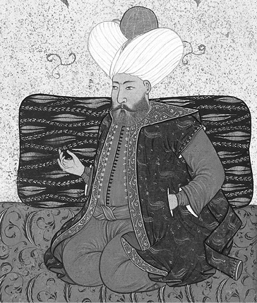
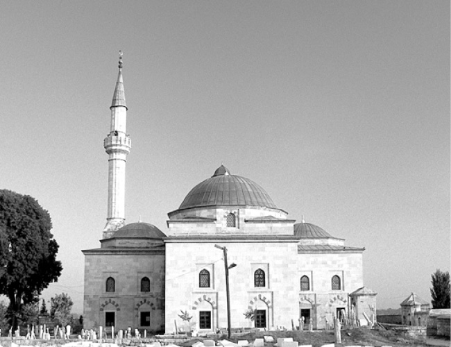
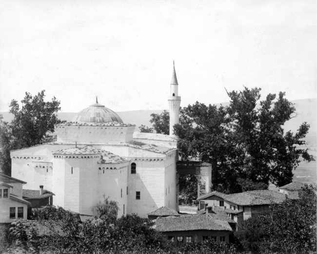
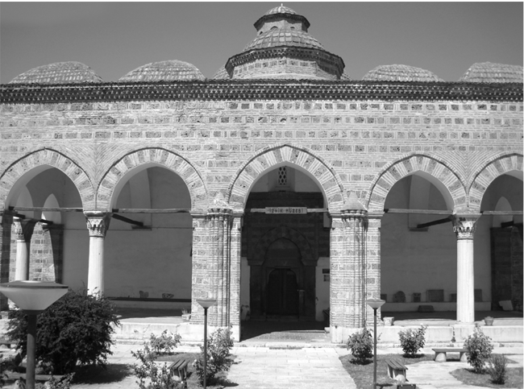
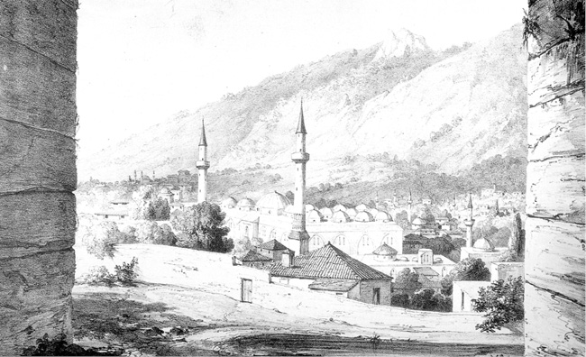
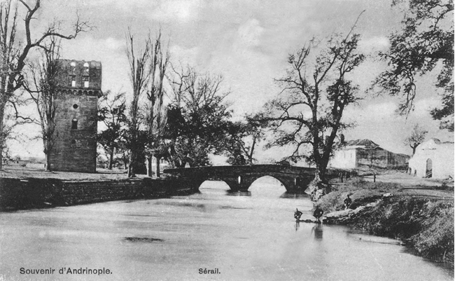

İKİNCİ BÖLÜM
ESİR TİCARETİ, ZANAATLAR, BAYINDIRLIK HİZMETLERİ, MADENLER
A. ESİR TİCARETİ
Esir/tutsak ve köle/kölelik kavramları, tarihin eski devirlerinden beri bilinen ve farklı uygulamaları görülen kavramlardır. Esir veya köle kullanımı özellikle tarım toplumlarında ve ticaretle uğraşan ülkelerde hem Doğu hem de Batı dünyasında, 20. yüzyıla kadar devam etmiştir. Köleliğin kullanımı en geniş manasıyla feodalizm/derebeylik rejiminin hüküm sürdüğü Ortaçağ Avrupası’dır. Aşağıdaki metinlerde de görüleceği gibi Osmanlılarda esir kavramı, beyliğin henüz kuruluş aşamasında olduğu bir dönemde ortaya çıkmış ve fetihlerin artmasıyla birlikte çok geniş boyutlara ulaşmıştır. İslamiyet esir/köle kullanımını adil ve insaflı davranılmak kaydıyla yasak etmemiştir. Esirlere muamele konusundaki en iyi örnekleri, Osmanlı dönemindeki uygulamalarda görmek mümkündür. Esir alınan bir kişi, ömrünün sonuna kadar o statüde kalacak diye bir kural yoktur. Bunda, Osmanlı devlet ve toplum düzeninin sınıf esasına göre şekillenmemesinin payı büyüktür. Osmanlı Devleti’nde küçük yaşlarda esir/satın alınan veya devşirilen bir çocuğun, Türk-İslam terbiyesi verilerek, ülke yönetiminde vezir/veziriazamlık gibi en üst makamlara geldiğini gösteren çok sayıda örneği mevcuttur.
1. İlk fetihlerde esir alınmamasının nedenleri
Osman Gazi zamanında Bizans topraklarına yapılan ‘doyum/ganimet’ seferlerinde, esir alma imkânı olduğu halde bazen alınmazdı. Bunun iki nedeni vardı: İlki, alacakları esirleri istihdam edebilecekleri iş alanlarının henüz olmaması (mesela asker olarak); diğeri ve en önemlisi ise Rum ahaliye korku salmamak, kendilerinden soğutmamak idi. O yüzden esire rağbet etmezler; elde ettikleri ganimetle yetinip geri dönerlerdi. 15. yüzyıl Osmanlı kaynaklarında yer alan esir konusu ile ilgili bilgileri şu tasnif içerisinde verebiliriz:
Gaziler hemen akın edip, Göynük vilayetini vurdular, Tarakçı Yenicesi’ni talan ettiler, buradan Göl Falanoz’a [Kalanoz] çıktılar, oradan Harman Kaya’ya geldiler, Karacahisar’a eriştiler. Köse Mihal önlerinde kılavuz idi. Ellerine çok mal geçti, zengin oldular. Vilayet halkı itaat etsinler, ürkmesinler diye esir almadılar. (ÂPT, 1949: 100; NT, 2008: 44-45)
2. Sultan Orhan’ın gazilerden esirleri satın alması
Karatekin Hisarı fethedildiğinde gazilerin aldığı esirleri/tutsakları, Orhan Gazi, kaynakların bildirmediği bir ücret ödeyerek gazilerden geri alır ve onları fethedilen bu kaleye yerleştirir. Osmanlı tarihinde ‘esir satışı’ ile ilgili ilk kayıt budur. Böylece Orhan, kaleye yerleştirilecek nüfus için pratik bir çözüm yolu bulmuş görünüyor; çünkü Müslüman ahalinin getirilip kaleye yerleştirilmesi uzun zaman alacak bir işti. Ayrıca Orhan, gazilerin ellerindeki esirlerin bedelini ödemek suretiyle onların gaza heyecanını da kırmamış oluyordu.
Orhan, bu fetihlerle uç bölgesini güçlendirdi. Ele geçirilen tutsak kâfirleri babası Osman’a gönderdi. Kendisi Karatekin Hisarı’nın üzerine yürüdü. Tekfuruna adam gönderip, “Hisarı bana ver, seni yine hisarında bırakayım. Sadece ad benim olsun. Benim hedefim, İznik’tir.” dedi. Bu söz tekfurun gücüne gitti, kaleyi vermedi. Bunun üzerine Orhan, hemen kalenin yağma edilmesini buyurdu. Gaziler, kaleyi yağma ettiler. Kalenin kapısını kırdılar, tekfurunu yakalayıp öldürdüler. Orhan, tekfurun malını ve kızını babası Osman’a gönderdi. Orhan, alınan esirleri gazilerden satın alıp söz ve aman ile onları yine hisara yerleştirdi. Samsa Çavuş’u da hisarda bıraktı. Kendisi Yenişehir’e babası Osman’ın yanına geldi. (ÂPT, 109; NT, 2008: 60)
3. Vezir Ali Paşa’nın esirleri gazilerden geri alıp sahiplerine iade etmesi
Vezir Ali Paşa, Pazarlı Doğan’ı bin kişiyle gönderip, “Var, Kosova’yı yık ve yak. Yağma edip, avratını ve oğlanını esir et.” dedi. Doğan da gelip Kosova’yı vurdu, avratını ve oğlanını esir etti. Kâfirler gelip paşaya yalvararak, “Alınan esirleri yine Türk’ten bize alıver, Kosova Hisarı’nı verelim.” dediler. Paşa, alınan esirleri Türk’ten toplayıp, yine kâfire verdi. Hisarı aldıktan sonra esirleri de sahiplerine verdi. Ama gaziler kâfirlerin elinden esirleri yine aldılar. (NT, 2008: 116-117)
4. Güzel bir Macar oğlanının üç yüz akçaya satılması
Bütün akıncılar ve gayretli yiğitler hemen atlarına bindiler. Beylerbeyine haber verip, “Vidin Sinanı, düşmana gitti, hep akıncılar ona tâbi olup birlikte gittiler.” dediler. Beylerbeyi de mecburi olarak, Vidin Sinanı’nın ardınca gitti. Sabah erken kâfirlerin üzerine yürüdüler. Davul çalıp hep birden tekbir getirip hücum edince kâfirler birbirini çiğneyerek kaçmaya başladılar. Ungurus Kralı [Macar kralı Sigismund] da bütün ağırlığını bırakıp başını güçlükle kurtardı. Kâfirin çoğu suya dökülerek boğuldular. Gaziler gayet doyum oldular, hatta güzel bir Ungurus [Macar] oğlanını Edirne’de üç yüz akçaya [ÂPT’de üç yüz akçadan artuğa] verdiler. Hak Teala tarafından bunun gibi doyumluk olmadı. Bu gaza, 837 (1433/34) yılında oldu. (ÂPT, 1949: 174-175; NT, 2008: 281-282)
5. Güzel bir cariyenin bir çizmeye; ata hizmet edecek esirin yüz elli akçaya satılması
“Ungurus [Macar] vilayetini dolaşan Sultan Murad, Belgrad’ın Ungurus’un kapısı olduğunu kavradı ve bu kapıyı açmaya karar verdi. İslam ordusunu toplayıp gelip Belgrad üzerine yürüdü. Savaşır gibi ederek Sava’yı geçti ve Belina’ya akın saldı. Gaziler öyle doyum ile geldiler ki, bir çizmeye bir güzel cariye verirlerdi. Ata hizmet eder esiri yüz elli akçaya verdiler. Esirin kalabalığı askerden fazla idi. Kısaca, “İslamiyetin ortaya çıkışından beri gazilerin böyle doyum oldukları görülmüş değildir.” dediler. Bu olay, 841 (1437/38) yılında meydana geldi. (ÂPT, 1949: 178-179; NT, 2008: 286)
Belgrad seferinde Sultan II. Murad’ın yanında olan tarihçi Âşık Paşazade şunları yazıyor:
“Fakir dahi orada birlikte idim. Yüz akçaya altı yedi yaşında bir oğlan aldım. Amma ata hizmet eder esiri yüz elli akçaya verirler idi. O seferde akıncılardan fakire dahi yedi kul ve cariye hâsıl oldu. Ve de şöyle olmuş idi ki esir askerden daha çok idi.” (ÂPT, 1949: 178-179)
6. Dört yaşındaki oğlanın yirmi akçaya satılması
II. Murad, yaz olunca Semendire üzerine yürüdü (1438/39). Hisarlarını sağlamlaştıran Vılkoğlu iki oğlunu Semendire’de bırakıp kendisi Ungurus’a gitti. Bunun üzerine hünkâr buyurdu, Laz ilini vurdular. Öyle doyum ile geldiler ki, dört yaşındaki oğlanı Üsküp’te yirmi akçaya sattılar. (ÂPT, 1949: 179; NT, 2008: 287)
7. Tarihçi Âşık Paşazade’nin beş esiri dokuz yüz akçaya satması
Şöyle kırgın oldu ki [841/1337-38 Semendire’nin fethinde] gazilerin atları kâfirlerin ölüleri üzerinde yürür idi. Atların ayaklarını basacak yer yoktu. İshak Bey çağırttı ki: “Hey gaziler! Kırdığınız yeter. Şimdiden sonra kâfiri esir edin” dedi. Vallâhi fakir [tarihçi Âşık Paşazade] de kırdığımdan başka beş kâfiri esir ettim. Üsküp’e getirip bu beş esiri o zamanda dokuz yüz akçaya sattım.” (ÂPT, 1949: 180)
8. Çok güzel cariyelerin üçer yüz akçaya alıcı bulması
[Sultan II.] Murad, Mora vilayetine akın emretti (1439/40). Öyle doyumluklar oldu ki, gayet güzel cariyeleri üçer yüz akçaya verdiler. Yağmaya gerek kalmadı. Gazilerin ellerine geçen altın ve gümüş avadanlıklar [bir işi yapmak, bir aracı onarmak için kullanılan alet takımı], emzikli şarap bardakları, sürahiler, tepsiler ve maşrabaların hesabı yoktu. Hatta kumaşı yük olur diye almadılar. (ÂPT, 1949: 181; NT, 2008: 289-290)
9. Esir olan Leh Ban’ın satıla satıla kurtulması
Leh Ban esir oldu [II. Kosova Savaşı], ama kendisini bildirmemiş, sonra satıla satıla kurtulmuş. (NT, 2008: 302)
10. Varat İskelesi’nde ‘esir bâcı’ alınması
Mihaloğlu Ali Bey gazilere izin verdi. Gaziler de Varat şehrini yağma ve talan edip malını, rızkını, esirini alıp, ilini ve vilayetini harap ettiler. O şehirden şu kadar mal aldılar ki, hesabını ancak Allah bilir derler. Maldan, floriden ve kumaştan başka, gaziler çok esir çıkardılar. Derler ki, Varat İskelesi’nde tam otuz iki bin esirin ‘bâc’ını yani resmini [vergisini] aldılar (1474/75). (OBT, 2008: 125-126)
11. Fatih Sultan Mehmed’in ele geçirilen ganimetin hepsini askere ve beylere dağıtması
Sivricehisar’ı fethettiler [859/1455]. Hak Teala gazilere ganimet malı ihsan etti. Beş on bin esir ellerine girdi. Sultan Mehmed’e haber oldu. Âlemin padişahının kalbi münevver olup, şad oldu. O ganimetten hâsıl olan esirleri, her ne ki var ise hepsini İslam askerine ve beylere, derecelerine göre güzel oğlanlar ve güzel cariyeler ihsan etti. (FSM, 1955: 84-85)
12. Gazilerin, esirleri kendi hizmetlerinde kullanmaları
Sultan Mehmed bu seferde bütün Mora vilayetini fethetti 862 (1457/58). Hisarların mallarını ve esirlerini aldılar. Esirlerini kendileri tasarruf ettiler yani kendi hizmetlerinde kullandılar. Gazilerin hepsi zengin oldular. Sultan, zafer kazanmış ve mutlu olarak Üsküp’e geldi. (NT, 2008: 324, dipnot 3920)
13. Anadolu esirlerinin kaçıp Amasra Kalesi’ne sığınmaları
Amasra, Karadeniz kenarında İslam diyarı arasında bir hisardır. Padişahı Frenk idi. Bütün Anadolu’nun esirleri kaçıp Amasra Kalesi’ne varıp kurtulurlardı. Ve hem bu Amasra kâfirleri zaman zaman deniz yüzüne çıkıp haramilik [korsanlık] ederlerdi. Sorulduğunda, “Başka vilayetin gemileridir, bizim değildir.” derlerdi. Bunların yaptıklarını öğrenen Sultan Mehmed [Fatih], “Mahmud Lala! Bu kale nasıl bir kaledir ki, babam ve dedelerim almadı. Özellikle, şunun gibi fesatları olur.” dedi.
Mahmud Paşa: “Belki Hak Teala sultanımın almasını takdir etmiştir, çünkü işler zamanlarına bağlıdır.” dedi.
Hünkâr: “Mahmud, Amasra Kalesi’nin hazırlığını gör.” dedi.
Mahmud Paşa hemen gemiler donattı. İşe yarar yoldaşlar toplayıp gemilere koyarak Amasra’ya gönderdi. Padişah karadan yürüyerek Akyazı’ya çıktı, oradan Bolu’ya vardı. Hünkârın Bolu’ya geldiğini işiten İsfendiyaroğlu İsmail Bey kaçıp Sinop Kalesi’ne girdi. Sonra hünkârın, kendi üzerine değil Amasra’ya geldiğini işitince ona iyi hediyeler gönderdi.
Hünkâr, Amasra’nın üzerine konup oturdu. Gemiler de gelip limanına girip beklediler. Türk’ün kaleyi savaşla fethedeceğini gören Amasra tekfuru, kendi kâfirlerine [kale halkına], “Elbette Türk bu hisarı bizden alır. Ve hem bizi kırarlar. Kadınlarımızı, kızlarımızı esir ederek bağırlarına basarlar. Bizim yaylarımızı kırarlar, başlarımızı kesip kale bedenlerine asarlar. Kaleyi kendi rızamızla verip, yanlarında hoş kişi olmak en iyisidir.” dedi.
Kâfirler de tekfurlarının bu sözlerine razı oldular. Bunun üzerine tekfur kaleden çıktı. Gelip hünkârın elini öpüp, kaleyi teslim etti. Padişah da belli kâfirlerini, oğlu, kızı ve eşyaları ile birlikte İstanbul’a gönderdi, bir çöplerini bile almadı. Hünkârın İflagan [Eflani-Paflagonya] ucunda bir hisarı vardı, oranın halkını sürüp, Amasra’ya getirdi. Hünkâr, büyük bir kiliseyi camiye çevirdi, İslam hutbesi orada da okundu. Amasra, 864 (1459/60) yılında fethedildi. (NT, 2008: 327-328)
14. Sultan II. Bayezid’in esirleri bağışlaması
Sultan [II.] Bayezid buyurdu: Eminler şehre [Kili] girip kaleden çıkacak esirleri çıkardılar. Padişah, bunların nicelerini bağışladı, nicelerini de İstanbul’a sürdü. Bazısını da Anadolu’da Eski Biga’ya gönderdi. Kiliselerini yıkıp mescit yaptılar. Sultan Bayezid, sürgün edilen kâfirlerin evlerini gazilere verdi. (NT, 2008: 377)
B. ZANAATLAR
1. Ahiler
Sultan II. Bayezid devri (1481-1512) tarihçilerinden Âşık Paşazade’nin (ö. 1493’ten sonra), 15. yüzyıl Anadolu’sunda faaliyette olan dört organizasyonun olduğundan söz ettiğini daha önce belirtmiştik. Bunlar, Anadolu gazileri, Anadolu abdalları (dervişleri), Anadolu ahileri ve Anadolu bacılarıdır. Bu bilgiye göre, Anadolu Selçuklu Devleti zamanında kurulan ahi teşkilatının faaliyetleri bu devirde de devam etmektedir.
Anadolu’da ahiliğin kurucusu olarak Ahi Evren/Evran (ö. 1262) bilinir. Asıl adı “Şeyh Nasirüddin Mahmud” olan Ahi Evren, İran’ın Hoy şehrinde doğdu. Selçuklu Devleti’nin başarılı sultanlarından I. Alaaddin Keykubad (1220-1237), Ahi Evren’e çalışmalarında büyük destek verdi. O, İslamî-tasavvufî düşünceye ve ‘fütüvvet’ ilkelerine bağlı kaldı. Tekke ve zaviyelerde ‘şeyh-mürit’, iş yerlerinde ‘usta-kalfa-çırak’ ilişkilerini düzene koydu. Ekonomik hayatın Anadolu’da kurulup gelişmesinde Ahi Evren’in büyük katkıları olmuştur.
‘Ahi’ kelimesi Arapça ‘kardeşim’ anlamına gelmektedir. Ahiliğin Anadolu’da kurulmasında fütüvvet teşkilatının büyük rolü vardır. Gençlik, kahramanlık ve cömertlik anlamlarına gelen ‘fütüvvet’in, İslam’ın ilk asrına kadar geriye giden bir tarihçesi vardır. Fütüvvet kuruluşları, başlangıçta tasavvufî bir özellik taşırken 13. yüzyıldan itibaren sosyal, siyasî ve iktisadî yapıya dönüşmüşlerdir. Fütüvvet ülküsünün, İslam’ın yayılmasına paralel olarak Suriye, Irak, İran, Türkistan, Semerkand, Endülüs, Kuzey Afrika ve Mısır’da esnaf ve sanatkârlar arasında yaygın olduğu bilinmektedir.
Anadolu’da hızla yayılan ahi teşkilatı şehirlerde olduğu gibi köylerde ve uç bölgelerinde de etkili idi. 13. yüzyıl Anadolu’sunda devlet otoritesinin iyice zayıfladığı bir dönemde ahi teşkilatına bağlı olanlar yalnız iktisadî açıdan değil, siyasî açıdan da önemli ölçüde söz sahibi idiler. Ahiler bağımsız siyasî bir güç olmamakla birlikte, merkezî otoritenin zayıfladığı, anarşi ve kargaşanın ortaya çıktığı zamanlarda siyasî ve askerî güçlerini göstermişlerdir. Özellikle 13. yüzyılın ilk yarısında Moğollar Anadolu’yu istila ettiklerinde, ahi birlikleri şehirlerin yönetimine mahalli otorite olarak egemen olmuşlardır. Nitekim II. Gıyaseddin Keyhüsrev’in Kösedağ’da Moğollara yenik düşmesinden sonra (1243), Tokat ve Sivas’ı ele geçiren ahiler, Moğollara karşı Kayseri’yi başarıyla savunmuşlardır. Benzer bir olay Osmanlı döneminde de yaşanmıştır. Sultan Yıldırım Bayezid’in şehzadelerinden Mustafa Çelebi (Düzme Mustafa diye bilinir, gerçekte Yıldırım’ın oğlu), ağabeyi Çelebi Mehmed’e karşı saltanat iddiası ile ortaya çıkarak Bursa’yı kuşatmak istemiş, ancak ahiler onun şehre girmesine engel olmuşlardır.
Büyük şehirlerde çeşitli gruplar hâlinde örgütlenen ahilerin her birinin bir zaviyesi vardı. Küçük şehirlerde ise değişik meslek grupları tek bir birlik teşkil ediyorlardı. Anadolu Selçuklu Devleti zamanında bu birlikler mesleklere ait problemleri çözmekte ve devlet ile olan ilişkileri düzenlemekte idiler. Mal ve kalite kontrolü, fiyat tespiti bu birliklerin esas görevi idi. Bu dönemde, teşkilata ilk kez girenlere ‘yiğit’ veya ‘çırak’ adı verilir, ahilik ise daha sonra kazanılırdı. Esnaf birliklerinin başında bulunanlara ‘şeyh’, ‘halife’ veya ‘nakip’ denirdi. Bütün esnafın en üst makamında ise ‘şeyhü’l-meşâyih’ bulunurdu. Anadolu’da köylere kadar yayılan ahilik pek çok devlet adamını, askerî zümre mensuplarını, kadı ve müderrisleri, tarikat şeyhlerini bünyesinde toplamıştır.
Osmanlı Devleti’nin kuruluşunda en önemli dinamiklerinden biri de ahilik idi. İlk Osmanlı padişahlarının ve vezirlerinin çoğunun ahi teşkilatına mensup oldukları bilinmektedir. Mesela, Sultan I. Murad’ın, ‘şed’ kuşandığı kayıtlara geçmiştir. Osmanlılar, ahilerden fetihlerde askerî güç olarak yararlanmayı bilmişlerdir. 14. yüzyılın ortalarında Orhan Gazi devrinde, Anadolu’yu dolaşan Arap gezgini İbn Battuta (ö. 1369), ahi birliklerinin şehir ve köylerde teşkilatlanan zanaat ve ziraat ehli zümreler olduğunu belirtir ve tasavvufî hayatla olan yakınlıklarına değinir. Konuk olduğu ahi zaviyelerinin adlarını da veren Battuta, ahilerden büyük bir övgüyle söz eder.
Ahiliğe girişin belli kuralları vardı. Bunlar şerbet içmek, şed veya peştamal kuşanmak ve şalvar giymekti. Esnaf birlikleri ustalar, kalfalar ve çıraklardan oluşuyordu. Birlik içinde yükselmek isteyen kişide mesleki yeterlilik ve liyakat aranırdı. Zanaat erbabı içinde dürüst ve en çok saygıya değer olan ‘üstad’ teşkilatın başkanı/reisi olur ve kendisine ‘ahi’ denirdi. Ahi olarak seçilen kişi muhtemelen yaşça da büyüktü. Osman Gazi’nin çeşitli konularda düşüncesine başvurduğu tanınmış bilgin ve mutasavvıf Şeyh Edebalı da ahi şeyhlerinden idi.
Bütün prensiplerini dinin asıl kaynağından alan ahiliğin nizamnâmelerine ‘fütüvvetnâme’ adı verilirdi. Ahiliğin temel ilkeleri, ahlakî ve ticarî kuralları bu kitaplarda yazılı idi. Her isteyen bu teşkilata hemen giremezdi. Teşkilata girecek kimse ilk önce fütüvvetnâmelerde belirtilen dinî ve ahlakî bilgileri ve kuralları okuyup öğrenmek ve bunlara uymak zorunda idi.
Fatih Sultan Mehmed devrinden itibaren siyasî gücünü giderek kaybetmeye başlayan ahilik, bundan böyle daha çok esnaf birliklerinin kendi iç işleri ile örgütün devletle olan ilişkilerini düzenleyen bir yapıya (lonca/esnaf teşkilatı) dönüşmüştür. (N. Öztürk, “Anadolu Ahileri”, Boztepe, Sayı 4-5, Sakarya 2003)
2. Dokumacılık
Ankara
Sultan I. Murad zamanında (1362-1389) ahilerin elinde olan Engüri/Ankara (Ortaçağdaki adı Selâsil; 15. yüzyılda ise Ankara) onların merkezi durumunda idi. Bu şehir, I. Murad’ın padişah olduktan sonra Anadolu’da Osmanlı topraklarına kattığı ilk yerlerden biridir. Ankara üzerine yürüyen Murad’ı ahiler şehrin girişinde karşılamışlar ve kalenin anahtarlarını kendisine teslim etmişlerdir. Aşağıdaki bilgiler, 15. yüzyılın ortalarında esnaf/lonca teşkilatının Ankara’da yoğun faaliyet içerisinde olduğunu göstermektedir.

Sultan I. Murad, Levnî
Fatih devri şair ve tarihçilerinden Enverî (ö. 1465’ten sonra), bu dönemin siyaset ve devlet adamı Veziriazam Mahmud Paşa’nın (ö. 1474) fetihlerini anlattıktan sonra onun, ülkenin değişik yerlerinde yaptırdığı eserleri hakkında bilgi vermektedir. Bu bilgiye göre Mahmud Paşa’nın yaptırdığı eserlerden biri de Ankara’dadır. Paşa bu şehirde bir ‘bezzazhane’ (bezhane) yani dokumacılık atölyesi inşa etti. Bu yüzyılın ortalarında en iyi sof (sof: Bir çeşit sertçe, ince yünlü kumaş; ham ipekten yapılmış astarlık kumaş) kumaşlar bu tezgâhlarda dokunurdu. İstebrak (sırma) ile işlenen bu kumaşlar Ankara’dan Doğu ve Batı ülkelerine ihraç edilirdi. Bu bez imalathanesinin orta ölçekli yani yaklaşık yüz kişi çalışanı olan bir iş yeri olduğu düşünülebilir.
Enverî, Mahmud Paşa’nın Ankara’ya hizmetini şöyle dile getirir:
Engüri’de o hıdîv-i nâm-ver______Yapdı bir bezzâz-hâne muteber
Şark u garba andan olur kısm-ı sof______Bihter istebrakdan anun ismi sof
(DE, 2003: b. 802, 803)
Alaşehir
II. Bayezid devri tarihçilerinden Âşık Paşazade ve Mehmed Neşrî, alemli ak bezin (elbiselik kumaşın) Denizli’de, sancaklık/bayraklık kumaşın Alaşehir’in kızıl ıvladısından (altın sırmalı kumaşından) kaftanın/hilatin (elbisenin) kenarlarının ise yine Alaşehir’in altın sırmalı kumaşından yapıldığını yazarlar. (ÂPT, 1949: 126; NT, 2008: 70, 94)
Önemli dokuma merkezlerinden olan Alaşehir Bizans egemenliğinde iken Yıldırım Bayezid devrinde Osmanlı topraklarına katılmıştı.
Bilecik
Orhan Gazi bu sözü kabul etti. Bilecik’te ak börkler büktürdü. Sonra adam gönderip, Amasya’da Horasanlı Hacı Bektaş’tan icazet [izin] aldı, önce kendisi giydi, sonra hizmetindekiler giydiler. (ÂPT, 1949: 117; NT, 2008: 74)
Denizli
O zamanda altın gümüş az idi. Donuzlu/Tonuzlu’da [Denizli] alemli ak bezler olur idi. Bir kimseye hilat giydirecek olsalar sırtak tekele [bir çeşit elbise] dikip, Alaşehir’in kızıl ıvladısını sincef [sencef/zencef: etek pervazı] edip o elbiseyi giydiriler idi. İshak Fakı ki geldi, Donuzlu’nun bezlerinden çok peşkeş getirdi. Ve hem söyledi. “Kızımızı alın oğlun Bayezid Han’a. Ve hem kızımıza birkaç adet hisar verelim cihazına [çeyizine] tuta” dedi. Murad Han Gazi kabul etti. Kütahya’yı, Simav’ı, Eğrigöz’ü, Tavşanlı’yı, bu birkaç parça hisarları kızına cihaz verdi. Söz sağlamlaştırıldı. (ÂPT, 1949: 129; krş. NT, 2008: 70, dipnot 825 ve s. 94)
3. Terzilik
Osmanlılarda terzi/terzibaşı tabirleri ilk kez 1413 yılında geçmektedir:
Terzi Saruca
Yıldırım Bayezid’in şehzadeleri Süleyman, Musa, İsa ve Mehmed Çelebiler arasındaki saltanat mücadelesi tam on bir yıl sürdü. Bu kardeşlerden ilkin İsa Çelebi bertaraf edildi (1405). Osmanlı ülkesinin sadece Rumeli kısmına egemen olan Emir Süleyman, kardeşi Musa Çelebi tarafından ortadan kaldırıldı (1411). Bundan sonraki mücadele Çelebi Mehmed’le kardeşi Musa Çelebi arasında devam etti. İki kardeş arasında Rumeli’de meydana gelen Çamurluova Savaşı’nda Musa Çelebi yenilgiye uğradı (1413). Bu son çarpışmada Musa Çelebi’nin ele geçmesine Saruca adındaki terzisi neden oldu. Terzi Saruca, atının ayak sinirini kesmek suretiyle Musa’yı attan düşürdü ve yakalanmasını sağladı. Bu olayla ilgili metin bilgileri şöyledir:
Ve bütün beyler kaçtılar. Sultan Mehmed’e geldiler. Musa’nın yanında sadece akıncı kaldı. Samakov’da savaştılar. Musa kaçtı. Atı çamura çöktü. Kendinin bir kulu var idi. Terzi Saruca derler idi. Musa’nın atının sinirini kesti. Musa’yı tuttu. Sultan Mehmed’e getirdi. Akşam çadırda maslahatı neyise gördüler. (ÂPT, 1949: 148)
Sonunda Sultan Mehmed, Musa Bey’i yendi. Musa kaçtı. Yolda kaçarken Musa’nın atı çamura çöktü. Meğer Musa Bey’in bir kulu vardı, derzisiydi. Saruca derlerdi. Musa’nın ‘atını sinirledi çaldı’ [atının ayak sinirlerini kesti]. Musa attan yıkıldı. Saruca, Musa Bey’i tuttu. Sultan Mehmed o gice Musa’nın ‘kaydını gördüler’ [öldürdüler] çadır içinde. Maslahat ne ise yerine vardı. Musa Bey Hak emrine vardı gitti. (AOK, 2000: 61-62; OBT, 2008: 47)
Terzibaşı Zağanos
Çelebi Mehmed’le Bizans Kralı arasında yapılan andlaşmaya göre Emir Süleyman’ın oğlu Orhan, Bizans sarayına rehin bırakıldı. Fakat Çelebi Mehmed’le Musa Çelebi arasındaki taht kavgası şiddetlenince kral, siyasî hesapları dolayısıyla, Şehzade Orhan’ı İstanbul’da tutmak istemedi. Orhan serbest bırakıldı ve Rumeli’ye geçti. Karinovası’nın akıncıları Orhan’ın etrafında toplanıp Yanbolu’ya geldiler. Çelebi Mehmed bunların üzerine yürüyünce akıncılar dağıldılar. Orhan’ın lalası Terzibaşı Zağanos, Orhan’ı tutup padişaha getirdi. Çelebi Mehmed yeğeninin gözlerini çıkartıp Bursa’ya gönderdi. Orhan’ın kız kardeşini Bursa’da bir sancak beyi ile evlendirdi. Orhan’a Geyve’de Akhisar köylerinden Çardak Köyü’nü tımar verdi. Çelebi Mehmed ne zaman Bursa’ya gelse Orhan’ın ve kız kardeşinin gönlünü alır, onları hoşnut ederdi. Bununla ilgili metinler:
Sultan Mehmed ve Musa Çelebi birbiri ile mücadele ediyordu. İstanbul Kralı Sultan Mehmed’den çekindiğinden Emir Süleyman’ın oğlunu kabul etmek istemedi, çünkü Sultan Mehmed ile andlaşması vardı. Bu sebepten oğlan [Orhan] İstanbul’dan çıkıp Eflak’a gitmek için Karinovası’na vardı. Karinovası’nın akıncıları oğlanı Eflak’a gitmeye bırakmayıp yanında toplandılar ve “Sana yardımcıyız.” deyip, onu tahrik ederek Yanbolu’ya götürdüler.
Bu haberi işiten Sultan Mehmed, oğlanın üzerine hücum etti. Sultan Mehmed’in yürüdüğünü işiten akıncılar oğlanın yanından kaçıp dağıldılar. Oğlanın bir lalası vardı, Terzibaşı Zağanos derlerdi. Oğlanı alıp Sultan Mehmed’e getirdi. Sultan, oğlanın gönlü gözünü açtı. Dünya gözünün örttü [ gözlerini çıkardı], Bursa’ya gönderdi, kendisi de eğlenmeyip ardınca Bursa’ya geldi. Emir Süleyman’ın bir de kızı vardı. Sultan, o kızı Bursa’da bir sancak beyine verdi. Oğlana da iyi tımar verdi. Geyve yöresinde Akhisar derler, o çevrede Çardak Köyü’nü [Çardak, Neşrî’de geçmez] derler, bir kâfir köyünü oğlana tımar verdi.
Sultan Mehmed, Bursa’ya her geldiğinde Emir Süleyman’ın oğlunu getirtir, hayli ihsanlar ederdi. Sultan, “kardeşimin oğludur” diyerek onu hoş tutar, gönlünü alırdı. Oğlanın kız kardeşine de daima ihsanını eksik etmezdi. (ÂPT, 1949: 149-150; NT, 2008: 244)
Verilen bu bilgilerden, daha ilk devirlerden itibaren şehzadelerin kendi terzileri olduğunu öğreniyoruz. Bu önemli kayıt bizi, ilk Osmanlı padişahlarının saraylarında kendi terzilerinin bulunduğu sonucuna götürür. Bilindiği gibi kronik yazarları genel olarak siyasî ve askerî konular üzerine yoğunlaştıklarından, gerek olmadıkça bu gibi konulara girmezlerdi.
Terzilerin başı olan terzibaşı tabiri, Osmanlı literatürüne 15. yüzyılın ilk çeyreğinde girdiğine göre, terzilerden oluşan ve örgütlenmesi daha geriye giden bir esnaf zümresi var demektir. Terziler, muhtemelen değişik esnaf mesleklerini içine alan ahi teşkilatının bir üyesi idiler. Sarayda padişahın dışında şehzadelerin veya yüksek rütbeli kamu görevlilerinin terzileri olduğu gibi ayrıca semt, çarşı ve oba terzileri de vardı. Halkın çok azının terzilik işleri olduğu tahmin olunabilir. Çünkü o günün Osmanlı toplumunda halk bazı ihtiyaçlarını bizzat kendisi karşılardı. Bu anlamda, özellikle kırsal kesimde oturanlar, herhâlde üstlerine giyecekleri elbiselerini kendileri dikiyorlardı. Nitekim bundan kırk elli yıl öncesine kadar Türk köylüsü giyecek ihtiyaçlarının büyük bir kısmını kendi imkânlarıyla karşılarlardı. Her köyde olmasa bile komşu köylerde bu işle uğraşan terziler olurdu. Köylüler özellikle dokuma veya örme işlerini kendileri yaparlardı.
Oba terzisi
Amasya’nın kesme kayadan bir zindanı vardı, onu boşalttılar. Dört yüz Kızıl Kocalı’yı içine döküp, ağzını sıvadılar. Yedi gün sonra bir kadın gelip, Yörgüç Paşa’ya çağırıp: “Bana korku geldi [İçime korku düştü]. Benim oğlumu da zindana koydun, onlardan değildi, ‘terzi’ idi. Obalarına iş işlemeye gitmişti. Bunlara uymuş, onlarla gelmiş” dedi. Yörgüç Paşa: “Şimdiden sonra ona çare yoktur. Nice edelim?” dedi. Kadın: “Sultanım, ölüsüne de razıyım.” Bunun üzerine Yörgüç Paşa, zindanı açmalarını söyledi. Bu kadının oğlunu aradılar. Dört yüz kişinin arasında bulup çıkardılar. Henüz ölmemiş. Suçsuz olduğunu anladılar. (NT, 2008: 273, dipnot 3411)
Terzi dükkânı
İslam medeniyetindeki şehir geleneğinin bir devamı olarak Osmanlı şehrinde de merkezde çarşı/bedesten yer alırdı. Çarşının hemen yanı başında haftanın belli günlerinde halkın alışverişini yapabildiği pazar kurulurdu. Alışveriş merkezinde yani çarşıda değişik esnaf gruplarına ait iş yerleri/dükkânlar bulunurdu. Nitekim Edirneli tarihçi Oruç Bey, 17 Nisan 1488 Perşembe gecesinde (893 yılı Cemaziyelevvel ayının ilk Perşembe gecesinde) Edirne’de Eski Cami yanındaki muhtesip dükkânı tarafında çıkan yangında paşmakçılar/ayakkabıcılar, terziler ve valacılar/başörtüsü dükkânlarının bulunduğu çarşının yanıp kül olduğunu yazar. (OBT, 2008: 141; krş. AOK, 2000: 134)
Oruç’taki bu bilgiler, ülkenin geneli için olmasa da, en azından Osmanlı başşehirlerindeki çarşı pazar hayatına ve o zamanın geçerli zanaatlarına dair fikir vermesi açısından önemlidir. Yine Oruç Bey’in verdiği başka bir bilgiye göre, 901 (1496) yılında meydana gelen yangında Edirne çarşısındaki kumaş dükkânlarında Batılı tüccarlara ait külliyetli miktarda kumaş yanmıştır (OBT, 2008: 170).
Terzi malzemesi
Kumaş, terzilik zanaatının en başta gelen malzemelerinden biridir. Kumaşın kalitesi, ham maddesinden ve dokuma özelliğinden ileri gelir. Osmanlılarda üstün hizmeti görülen kişilere veya devlet erkânına padişahın hediye ettiği hilat/kaftan değerli kumaştan yapılan bir elbiseydi. Bu tür kumaşların dokunduğu, ülke içinde/dışında, belli yerler vardı. Bu dönem kayıtlarında kumaşın ticaretini yapan Batılı kumaş tüccarları, başta Osmanlı başkentleri olmak üzere büyük şehirlerde yerleşmişlerdi. Aşağıdaki metinler, bu hususta önemli bilgiler vermektedir.
Kumaş
Germiyanoğlu dahi asker verdi. Karamanoğlu dahi Turgutlu’dan hayli asker gönderdi. Mustafa da Bursa’ya hücum etti. Bursa’nın azizleri [büyükler/uluları] işittiler ki Mustafa gelir imiş, tez şehirden hayli akça topladılar. Ve yüz parça kumaş aldılar. Şehrin ahilerinden Ahi Yakup ile Ahi Kadem’i gönderdiler. (ÂPT, 1949:160)
Devletsizler onu [Mustafa’yı] tahrik edip, Germiyan ve Karamanoğlu asker verip, Bursa’ya yürüdü. Bursa’nın uluları bunu işitip, ilden akça devşirip [toplayıp], yüz parça kumaş alıp, Ahi Yakup ile Ahi Kadem’i gönderdiler. (NT, 2008: 262)
Etrafa akın edip, her taraftan toyumlıklar [ganimetler] olup, kumaş cinsinden gayri mübalağa altın, gümüş avadanlıklar aldılar. (NT, 2008: 381)
Ungurus [Macaristan] vilayetinin Varat dirler bir ulu şehri vardır, Ungurus Kralı’nın bir tahtı dahı odur derler. Bâzirgân [tüccar] şehridir, gayet galaba, mallı, muazzam şehirdir. Ungurus vilayetinin varıdır, dip Frengistan’da bağlanan kumaş oraya gelir, bendergâhtır. (OBT, 2008: 125)
Edirne’de 901 yılı Zilkade ayının evvelinde [Temmuz 1496] hisar içinde Kapan yanında Hacı Halil Evleri derler, mükellef evlerdi, yandı. İçinde Frenk bâzirgânları olurdu. On kez yüz bin akçalık kumaşları bile yandı. (OBT, 2008: 170)
Frenk, Herat, Bursa, Şam ve Kefe’nin nefis akmişeleri/kumaşları
Bütün bu kumaş çeşitleri, Fatih Sultan Mehmed’in şehzadeleri Bayezid ile kardeşi Mustafa Çelebi’nin Edirne’deki sünnet düğünü dolayısıyla gelen hediyeler arasında geçmekte olup, kimler tarafından ne kadar kumaş getirildiği bilgisi verilmemektedir. (TEF, 1977: 90)
Mecazi anlamda terzi kayıtları
İki ordu birbirine karışıp bir büyük cenk olup, ecel yağmuru yağıp, kudreti semai vurulup, ecel terzisi fistanlar biçip, elmas temrenli oklar atılıp, ciğerler çâk edip … (OBT, 2008: 73)
Sultan Mehmed Han [Fatih] orta göğüsde durup, yeniçeri ve azap, toplar, tüfekler, demirli şişli kalkanlar dikilip, demirden hisar gibi durup toplar, tüfekler, zenberekler [zenberek/zenbûrek: çelik veya pirinçten yapılmış ok] ve oklar atılıp, kaza yağmuru yağıp, ecel yeli esip, ecel terzisi eceli gelene kaftanlar kesip biçerdi. (OBT, 2008: 123)
Rumeli gazileri Sam yeli gibi esip, ecel terzisi kaftanlar biçip oklar, nizeler başlar kesip kanlar döküp, iki ordu birbirine katılıp karılıp bir azim neberd oldu kim, Efrasiyab gibi cenk etdiler. (OBT, 2008: 142)
Çünkü kâfirlerin üzerine ecel yeli esdi. Kaza yağmuru yağıp kudret terzisi kaftanlar biçip, sünüler [oklar] arşın olup, oklar iğne, kılıçlar sındı [makas] olup, başlar kesilip kanlar dökülüp, kollar, budlar sökülüp kâfirleri, dinsizleri öyle kılıçtan geçirdiler ki dünyaya gelmedik gibi ettiler. (OBT, 2008: 159)
Kudret yeli esip, kâfir askeri üzerine ecel derzisi kaftanlar biçip, oklar iğne, süniler arşun olup, kılıçlar sındular olup, o gün kâfirlere sanki kıyamet kopup, yahut İsrafil surunu ürmişdi [üflemişti]. (OBT, 2008: 177)
Sonuç olarak, 15. yüzyıl Osmanlı tarih eserlerinin bir kısmında, terzi/terzibaşı tabirleri geçmektedir. Nitekim 1413 yılında bu mesleği icra eden iki kişi, Terzi Saruca ve Terzibaşı Zağanos, zanaat unvanlarıyla birlikte anılmaktadır. Bu ilk bilgilerden hareketle, 15. yüzyıl Osmanlı toplumunda saray mensuplarının, diğer kamu görevlilerinin ve halkın elbise ihtiyaçlarını karşılayan esnaf zümresinden biri olarak terzilerin semt, çarşı ve obalarda zanaatlarını icra ettiklerini söyleyebiliriz. Kumaş dışındaki terzi malzemesi hakkında, incelenen dönemin eserlerinde herhangi bir kayda rastlanmamaktadır.
15. yüzyıl Osmanlı tarihlerindeki terzilik kayıtları için bk. N. Öztürk, “Osmanlı Kroniklerinde Terziliğe Dair İlk Kayıtlar”, (Kuruluştan 1502’ye kadar), ACTA TURCICA, Çevrimiçi Tematik Türkoloji Dergisi Online Thematic Journal of Turkic Studies, “Türk Kültüründe Terzilik”, Emine Gürsoy Naskali-Hilal Oytun Altun, Yıl 1, Sayı 2/2 (Temmuz 2009), 58-63)
4. Ayakkabıcılık
Daha önce de yazıldığı üzere Oruç Bey, 17 Nisan 1488 Perşembe gecesi Edirne’de Eski Cami yanında ‘muhtesip’ (İslam şehirlerinde çarşı ve pazar esnafını denetleyen görevli, belediye memuru/zabıtası) dükkânı tarafında çıkan yangında başmakçılar/paşmakçılar (ayakkabıcılar), terziler ve valacılar (vala/bala: başörtüsü) dükkânlarının yanıp kül olduğunu haber vermektedir. (OBT, 2008: 141)
C. BAYINDIRLIK HİZMETLERİ
1. Dinî ve sosyal kurumlar
İslam ülkelerinde dinî kimliği temsil eden yapıların en başında cami gelirdi. O yüzden Osmanlılar, bir Hıristiyan beldesini (ülke, şehir, kale) fethettiklerinde yaptıkları ilk işlerden biri, o yerin büyük kilisesini camiye dönüştürmekti. Eğitim-öğretim faaliyetleri için de aynı yol izlenirdi. Kilise veya manastırın medreseye çevrilmesi ile önemli bir ihtiyaç karşılanmış olurdu. Bütün bunlar yapılırken Müslüman olmayan (gayrimüslim) ahalinin ibadet ihtiyacını karşılayacak sayıda dinî yapının bırakılmasına özen gösterilirdi.
Fetih sonrasında ahalinin evlerini barklarını terk etmeleri için herhangi bir baskı uygulanmazdı. Herkes oturduğu yerde kalıp kalmamakta serbest idi. Yine de bulundukları yerleri terk edenler olurdu. Boşalan evlere Müslüman ahali getirilip yerleştirilir, bazen gaziler bizzat kendileri yerleşirlerdi. Nitekim İznik’in fethinden sonra (1331), Orhan Gazi’nin izniyle İznik evlerine gaziler yerleşmişlerdir. Aşağıda görüleceği gibi yeni kilise yapımı padişahın iznine tâbi idi. Bazı Hıristiyan yöneticiler kilise yapımı için aldıkları izni suistimal ederek, kilise yerine kale/hisar yapmışlardır.
İznik tekfuru, İznik Kalesi’nin İstanbul kapısından çıkarak halkı ile birlikte İstanbul’a gitti. Ama sipahisinin çoğu gitmeyip şehir halkı ile birlikte Orhan’ı karşılamaya çıktılar. Orhan’ı alıp kalenin Yenişehir kapısından şehre götürüp, kapının iç yanında Abakulus adlı bahçede ağırladılar. Sonra güzel yüzlü kadınlar geldiler. Orhan, “Bu kadınlar kimlerdir?” diye sordu. Cevap verdiler ki, “Sultanım! Bunların kocalarının kimisi açlıktan, kimisi savaştan kırılmıştır. Yüksek evlerde yalnız kalmışlardır.” dediler. Orhan, gazilere bu hatunları dinî nikâhla almalarını buyurdu. Gaziler, bu hatunlarla evlendiler, hazır ev ve avrat bulup, geçip saray gibi evlerde oturdular.
Orhan Gazi İznik’i fethedince [1331] buradaki büyük kiliseyi cuma mescidi, bir manastırı medrese, Yenişehir kapısı çıkışında bir imaret yaptı. Hacı Hasan derlerdi, dedesi, Edebalı’nın müridiydi. Orhan, imaretin şeyhliğini ona verdi. Şimdi de şeyhlik onun evladı elindedir. (ÂPT, 1949: 119-120; NT, 2008: 75-76)
Sultan Mehmed [Fatih] Enez’i fethetmeye karar verdi. Hazırlıklar yapıldı. Gazilerin karadan hücum ettiğini gören Enez tekfuru hemen malını, eşyasını, karısını ve güzel kızını yanına alıp hünkâra geldi. Bütün sipahileri de onunla birlikte geldiler. Hünkâr, tekfura ve sipahilere iyi dirlik verdi. Şehrin boş kalan evlerine etraftan gelen Müslümanları yerleştirdi. Yerlerinde kalan kâfirleri bıraktı. Nice kiliseleri mescide çevirdi. Kiliselerin çanlıklarını yıktırıp, yerlerine minareler yaptırdı. Şehrin karşısında Taşöz dedikleri bir hisarcık vardı, ada idi. Hünkâr onu da fethetti. Kısaca, bütün Enez çevresiyle birlikte fethedildi, 858 (1454) yılında. (ÂPT, 1949: 195; NT, 2008: 318)
Kefe şehrinin ileri gelen kâfirleri, Kefe tekfurunun yanında toplanarak, “Bu Türklere karşı ne edersin?” diye sordular. Hayret eden tekfur, “Siz ne dersiniz?” diye sordu. Bunlar da “Türklerin bütün çabası kaleyi almaktır, hem almaya da güçleri vardır. Şimdi zorla alırlarsa avratlarımıza, oğlanlarımıza varıncaya kadar bizi esir ederler ve kırarlar. Kaleyi biz verirsek daha iyi olmaz mı? Hem bu Türkler, zorla nereyi aldılarsa bozdular. Kendi rızamız ile verirsek hiç kimseye zararları olmaz.” dediler.
Tekfur, “Siz bilirsiniz. Ben size muhalefet etmem.” dedi. Sonra Gedik Ahmed’den aman dilediler. Gedik Ahmed Paşa da aman verdi. Beşinci gün hisarın kapısını açarak hisarı teslim ettiler. Hisar fethedilince Osmanlı, İslam sancağını Kefe’nin burcuna dikti. Kale bedenlerinde nevbetler çalındı. Putları bozdular. Kiliseleri mescit yaptılar. Müezzinler her tarafta ezan okuyup namaz kıldılar. Şehrin ortasındaki büyük kiliseyi cami yaptılar. Cuma günü cuma namazı kılındı. Hutbe Sultan Mehmed adına okundu. Padişaha layık olan nesneleri aldı, bırakacağını bıraktı. Özetle, hisarla ilgili işleri hakkıyla yerine getirdi.
Ahmed Paşa namazdan sonra gazilere hilat giydirdi. Tekfur da Ahmed Paşa’nın yanına gelmişti, hazinesini alıp Sultan Mehmed’in hazinesine teslim etti.
Gedik Ahmed, Kefe şehrinin halkını, sipahisini, şehirlisini, zenginlerini, fakirlerini, avratını, oğlanını, kısaca, herkesi ve her şeyi defter ettirdi, yani yazımını yaptırdı. (ÂPT, 1949: 226; NT, 2008: 359-360)
Sultan II. Murad Edirne’de oturdu. Padişah, Sırp Kralı’nın barış isteği üzerine veziri Saruca Paşa’yı gönderdi. Vılkoğlu ile barış yapıldı. Kral kızını Sultan Murad’a verip nikâh yapıldı. Saruca Paşa gelini alıp geldi. Vılkoğlu Semendire’de bir kilise yapmak için Sultan Murad’dan izin aldı. Ama sonra bunun hisar olduğu ortaya çıktı. Kral hisarı bir yılda tamamladı.
Saruca Paşa hisarı gördüğü halde Sultan Murad’a söylemeyip gizledi. Bu sebepten Sultan Murad, Saruca Paşa’yı hem veziri hem nedimi ve hem de beylerbeyi iken azletti. Amasya’da Sultan Alaaddin’e lala oldu. Sonra oradan gelip Gelibolu’da kaptan oldu. (OBT, 2008: 59)
Camiler
Geyikli Baba vefat edince Orhan Gazi, üzerine türbe, yanına bir ‘tekke/tekye’ [tarikat mensuplarının barındıkları, ibadet ve tören taptıkları yer, dergâh] ve bir de cami yaptı. Şimdiki zamanda orada beş vakit dua edilir. Geyikli Baba Tekyesi/Zaviyesi derler. (ÂPT, 1949: 123; NT, 2008: 80)
Orhan Gazi gelip İznik’i etrafıyla birlikte fethetti. Bir ulu [büyük] cami ve bir imaret [yoksullara ve öğrencilere yiyecek dağıtmak için kurulmuş hayır kurumu] yaptırdı. Aşını [yemeğini] kendi eliyle dağıttı. O vilayette ilk imareti Orhan Gazi yaptı, İznik’i fethettikten sonra. (OBT, 2008: 18)

Edirne Muradiye Camii’nin günümüzdeki hali. Fotoğraf: Murat Arabacı
Murad Gazi, Bilecik’te bir ‘cuma mescidi’, Bursa Hisarı’nda Saray kapısında bir cami, Kaplıca’da bir imaret ve bir medrese yaptı. (NT, 2008: 94)
Âlemin sığınağı Yıldırım Bayezid Bursa’da oturdu. Mühendisleri, mimarları ve bina yapanları topladı, bir ulu caminin temelini attı. Eğlenceli sohbet meclislerinden vazgeçti, büyük âlimlerle, ulu şeyhlerle düşüp kalktı; din yolunu tuttu, zulmü dünyadan kaldırdı. (NT, 2008: 151)
Yıldırım Bayezid Han, Bursa’da bir ulu cami, büyük bir imaret, iki medrese, bir hastahane yaptırdı. (NT, 2008: 165)
Yıldırım Bayezid Bursa’da oturdu. Bir cami, bir medrese ve bir bîmârhâne [hastahane] yaptırdı. (OBT, 2008: 31)
Musa Çelebi Edirne’de Eski Cami’nin temelini attı, temelini yeryüzüne çıkardı. Sonra Çelebi Mehmed tamamladı. Mehmed bâzâristân [çarşı/bedesten] ve çevre dükkânlarını yaptırdı, ama bitiremedi. Oğlu Sultan Murad tamamladı. Vakıflarını düzenledi. Cami Sultan Murad adına oldu. (OBT, 2008: 47, 53)
Edirne’de Tunca ve Meriç suları taştı. Edirne şehrinin kenarları harap oldu. Sel suları yeni imareti, hamamı, köprüyü, merhum Süleyman Paşa [Orhan Gazi oğlu] Camii’ni, Küçük Pazar’ı ve Çukurbostan’ı alıp götürdü, 21 Cemaziyelâhir 902 Cuma gecesinde (24.02.1497 Cuma) meydana geldi. (OBT, 2008: 171)
Çelebi Mehmed, devlet ve saadetle sağ salim ve ganimet sahibi olarak fetih diyarı Bursa’ya döndü. Öteki dünya için büyük bir imaret, o güne kadar kimsenin görmediği büyük bir cami, garipler ve fakirler için bir misafirhane yaptı. Yüksek bir medresenin de temelini attı. Kendisi için yüksek bir kubbe [türbe] yapmalarını emretti. (NT, 2008: 253, dipnot 3202)
Sultan Murad Gazi … saltanat merkezi Bursa’da bir imaret ve büyük bir cami yaptı. … Caminin yanında bir medrese yaptırdı. İkisinin arasına asil vücudu şeref bulsun diye bir yüksek kubbe yapılmasını da buyurdu. O kubbede gece gündüz hiçbir saat Kur’an okumaktan geri kalmamaları emrolundu. Edirne’de de büyük bir cami, fakirler evi, yüksek bir imaret, darülhadis, bir medrese ve Mevlevihane yaptırdı. Bu camiye de ilk şart üzere devam etsinler diye otuz hafız ve on dört tehlilci [‘lâilâhe illallah’ diyen] buyurdu. (NT, 2008: 305, dipnot 3760)
Sultan Murad Edirne’de Yeni Camii yapmaya başladı (1438). Cuma gün Edirne’den çıkıp Ungurus vilayetine sefer etti. (OBT, 2008: 60)
Bursa’ya gelen Sultan Mehmed [Fatih], Gelibolu’dan geçerek Edirne’ye gitmek isteyince, “Devletli Sultanım! Şu sırada kâfir gemileri gelip Gelibolu Boğazı’nı kapatmıştır.” diyerek hünkârı alıp Kocaeli’ye ve oradan İstanbul’un üst yanındaki Akçahisar’a getirdiler. Anadolu Hisarı’na geldi, şimdi ona Yenicehisar derler. Orada bir cami yaptırarak cuma namazını kıldı. Sonra babasının geçtiği yerden geçerek Akçahisar’ın karşısına kondu. (NT, 2008: 309, dipnot 3786)
Sultan Mehmed [Fatih] İstanbul’un güzel bir yerinde sekiz medrese yapıp ortasında ulu bir cami, karşısında yüksek bir imaret, bir darüşşifa [hastahane], suhteler [medrese talebeleri] için ek bina; sofilerin duracağı ziyarethaneler yaptı. Medreselerin ve talebelerin aşını, ekmeğini ve etini imaretten karşıladı. Bu, ‘biri bine karşılık’ bir imarettir.
Şehrin dışında, Ebu Eyyüp Ensari’de bir imaret, bir medrese, bir cami ve bir hamam yaptı. Ayrıca Ebu Eyyüp Ensari üzerine bir türbe yaptırdı. Dünyada benzerini hiç kimsenin görmediği nice hamamlar yaptı. (NT, 2008: 315-316)
Sultan Mehmed’in [Fatih] İflagan [Eflani-Paflagonya] ucunda bir hisarı vardı, oranın halkını sürüp, Amasra’ya getirdi. Hünkâr, büyük bir kiliseyi camiye çevirdi, İslam hutbesi orada da okundu, 864 (1459/60) yılında. (NT, 2008: 328)
Hekim Lârî derler, Acem vilayetinden Lâr’dan gelmiştir. Arap, Acem ve Hindistan’ı gezip gelip Rum vilayetinde [Anadolu’da] merhum Sultan Mehmed [Fatih] yanında şöhret tuttu. Onun şöhreti Sultan Bayezid devletinde de devam etti. Lârî Edirne’de Tahtakale semtinde bir cami ve bir mektep yaptı. Yaptırdığı cami önüne Tunca Nehri’nden su getirdi. (OBT, 2008: 185, 196)
905 yılı mübarek Muharrem ayının on birinci gününde Pazar gecesi (18.08.1499 Pazar) Edirne’de hisar içinde Kazancılar Çarşısı, kervansaray, kilise, Halepli Camii çevresi ve nice mahalleler yandı. (OBT, 2008: 190)
24 Zilhicce 906 Cumartesi (11.07.1501 Pazar) akşam vaktinde, Edirne şehri tamamen yandı. 2 ulu cami, Eski ve Yeni Cami, 10 kervansaray, 12 mahalle mescidi ve çarşı çevresi, 2 hamam ve 5 binden ziyade dükkân yandı derler. Bu olay ki oldu, Hak Teala’nın bir hışmı, gazabı ve azabı olmuştu, bu halkın fiiline göre. (OBT, 2008: 210-211)
Mescitler
Osman Gazi’nin oğlu Alaaddin Paşa, Bursa’da Kükürtlü’de bir tekke yaptı. Kaplıca kapısı girişinde ve kale içinde bir mescit yaptı. Kendisi de orada oturdu. Bu zamana kadar onun evladından vardır. (ÂPT, 1949: 115; NT, 2008: 71)

İznik Orhaniye Camii (yaklaşık 1900)
Orhan Gazi, oğlu Süleyman Paşa’yı İznikmid [İzmit]’e getirdi. Kiliseleri ‘mescitler’ etti [yaptı]. Ve bir kiliseyi dahi medrese etti. Elan şimdi dahi medresesi vardır. (ÂPT, 1949: 117)
Orhan, oğlu Süleyman Paşa’yı İznikmid’de koyup, kiliselerini mescitler etti. Büyük bir kiliseyi medrese yaptı, elan dahi medresedir. (NT, 2008: 72)
Orhan Gazi kendisi gelip İznikümid’i [İzmit] fethetti. Kiliselerini yıktı, yerine mescitler ve medreseler yaptı. Şimdi henüz İzmit’te medresesi vardır. Bir de imaret [aşevi] yaptı. Fakirler her gün gelip imarette yemek yerlerdi. Muhabbet ettiği dervişlere zaviyeler yapıverdi. (OBT, 2008: 16)
Çelebi Mehmed, devlet ve saadetle sağ salim ve ganimet sahibi olarak fetih diyarı Bursa’ya döndü. Öteki dünya için büyük bir imaret, o güne kadar kimsenin görmediği büyük bir cami, garipler ve fakirler için bir misafirhane yaptı. Yüksek bir medresenin de temelini attı. Kendisi için yüksek bir kubbe [türbe] yapmalarını emretti. Otuz hafız her gün o kubbede Allah’ın kelamını hatmetsinler dedi. Hâsıl olan sevabı, baba ve dedelerine vesair Müslümanlara bağışlasınlar, diye buyurdu.
24 Zilhicce 906 Cumartesi (11.07.1501 Pazar) akşam vaktinde, Edirne şehri tamamen yandı. 2 ulu cami, Eski ve Yeni Cami, 10 kervansaray, 12 mahalle mescidi ve çarşı çevresi, 2 hamam ve 5 binden ziyade dükkân yandı derler. Bu olay ki oldu, Hak Teala’nın bir hışmı, gazabı ve azabı olmuştu, bu halkın fiiline göre. (OBT, 2008: 210-211)
Cuma mescitleri
Orhan Gazi İznik’i fethedince [1331] buradaki büyük kiliseyi ‘cuma mescidi’, bir manastırı medrese, Yenişehir kapısı çıkışında bir imaret yaptı. (ÂPT, 1949: 119-120; NT, 2008: 76)
Murad Gazi, Bilecik’te bir ‘cuma mescidi’, Bursa Hisarı’nda Saray kapısında bir cami, Kaplıca’da bir imaret ve bir medrese yaptı. (NT, 2008: 94)
Murad Gazi Bilecik’te bir büyük cuma mescidi yaptı. Ve Bursa’da bir cuma mescidi ile bir medrese yaptı. (OBT, 2008: 26)
Tekke ve zaviyeler
Osman’ın halkı arasında aziz bir şeyh vardı, Edebalı derlerdi. Gayet bilgili ve halkın inandığı bir kişiydi. Veliliği ve kerameti görülmüştü. Bütün illerde meşhur olmuştu. Rüya ilmini iyi bilirdi. Dünyalığı sonsuzdu, ama fakirmiş gibi görünürdü. Ona ‘derviş’ lakabı ile hitap ederlerdi. Bir zaviye [zaviye, tekke’nin küçüğü ise de burada ‘tekke’ anlamında] yaptı. Zaviyesine gelen herkese hizmet ederdi. Ara sıra Osman da onun zaviyesine misafir olurdu. (NT, 2008: 40)
Fazlullah Kadı, Akça Koca nesildendi. Onun, zamanımızda Gelibolu’da tekkesi vardır… Orhan Gazi hemen Geyikli Baba’ya inanıp, çok nesne verdi. Ona bir büyük tekke yaptı ve vakıflar kurdu. Şimdi zamanımızda Geyikli Baba Tekkesi diye anılır. (OBT, 2008: 17)
Osman Gazi, Köse Mihal’in uç bölgesi konusundaki tedbirini uygun gördü. Hemen gazileri topladı. Gelip Beştaş Zaviyesi’ne kondu. Şeyhinden Sakarya [NT’de Sakarı] Suyu’nun geçidini sordular. Şeyh, “Allah’ın yardımı ile her yer, gazilere geçittir.” dedi. (ÂPT, 1949: 99; NT, 2008: 44)
Osman düğün yaparak, Lülüfer [Neşrî’nin Manisa yazmasında Nilüfer) Hatun’u oğlu Orhan’a verdi. Lüfer Hatun’un, Bursa’da Kaplıca kapısına yakın yerde hisar dibinde bir tekkesi vardır. (ÂPT, 1949: 102; NT, 2008: 50)
Rivayet olunur ki, Osman Gazi’yi Manastır’da defnettikleri zaman, Orhan ve kardeşi Alaaddin Paşa bir araya geldiler. O vakit, Bursa Hisarı’nda Bey Sarayı’na yakın yerde tekkesi/zaviyesi olan Ahi Hasan şunları söyledi: “Osman’ın malını oğlanlarına bölüştürmek ve miras işlemini yapmak için orada hazır olan azizler [erenler] toplandılar, ama hiç hazinesi bulunmadı. (ÂPT, 1949: 115; NT, 2008: 70)
Osman Gazi’nin oğlu Alaaddin Paşa, Bursa’da Kükürtlü’de bir tekke yaptı. Kaplıca kapısına girilen yerde ve kale içinde bir mescit yaptı. Kendisi de orada oturdu. Bu zamana kadar onun evladından vardır. (ÂPT, 1949: 115; NT, 2008: 71)
Gegibize/Gegivize’de [Gebze] tekkesi olan Kadı Fazlullah, Akça Koca neslindendir. Kocaili’nin, Konurpa’nın ve Bolu vilayetinin fethinin aslı budur. (ÂPT, 1949: 117; NT, 2008: 73)
Geyikli Baba vefat edince Orhan Gazi, üzerine türbe, yanına bir tekke [tekye] ve bir de cami yaptı. Şimdiki zamanda orada beş vakit dua edilir. Geyikli Baba Zaviyesi derler. (ÂPT, 1949: 123; NT, 2008: 80)
Orhan Gazi kendisi gelip İznikümid’i [İzmit] fethetti. Kiliselerini yıktı, yerine mescitler ve medreseler yaptı. Şimdi henüz İzmit’te medresesi vardır. Bir de imaret [aşevi] yaptı. Fakirler her gün gelip imarette yemek yerlerdi. Muhabbet ettiği dervişlere zaviyeler yapıverdi. (OBT, 2008: 16)
Orhan Gazi, biri Bursa’da biri de İznik’te olmak üzere iki imaret yaptı. Bursa’daki manastırı medreseye çevirdi, sevdiği dervişlere zaviyeler yaptı. Nitekim Geyikli Baba’ya zaviye yaptı. (NT, 2008: 86)
Süleyman Paşa atıyla tekerlendi. Süleyman Paşa at altında kaldı, orada şehit oldu. Meyyitini getirip Bolayır’da defnettiler. Şimdi mezarı oradadır. Bolayır’da bir zaviyesi vardır. (OBT, 2008: 21)
Murad Han, Bursa’ya geldi. Oğlanlarını sünnet etti. Sonra Yenişehir’de bir imaret yaptı. O zaman bir derviş vardı, Postinpuş derlerdi, ona bir zaviye yapıverdi. (NT, 2008: 93-94; krş. ÂPT, 129, 231)
İmaretler / aşevleri
Orhan Gazi İznik’i fethedince [1331] buradaki büyük kiliseyi cuma mescidi, bir manastırı medrese, Yenişehir kapısı çıkışında bir ‘imaret’ yaptı. Hacı Hasan derlerdi, dedesi, Edebalı’nın müridiydi. Orhan, imaretin şeyhliğini ona verdi. Şimdi de şeyhlik onun evladı elindedir.

İznik’te Orhan Gazi zamanında Nilüfer Hatun tarafından yaptırılan günümüzde müze olarak kullanılan imarethane, Fotoğraf Ahmet Özdemiroğlu
İznik’te imaret işlemeye başladığı zaman, ilk yemeği Orhan kendi eliyle dağıttı. Gece çırağını [kandil] da kendi eliyle yaktı. (ÂPT, 1949: 119-120; NT, 2008: 76)
Orhan Gazi, biri Bursa’da biri de İznik’te olmak üzere iki imaret yaptı. Bursa’daki manastırı medreseye çevirdi, sevdiği dervişlere zaviyeler yaptı. Nitekim Geyikli Baba’ya zaviye yaptı. Orhan Gazi, her yerleri imaret etmeyi severdi. Issız yerleri imar eder, oralara Müslümanları yerleştirirdi. Bursa’da yaptırdığı imaret yeri öyle ıssız bir yerdi ki, ikindiden sonra adam varmaya korkardı. (NT, 2008: 86)
Orhan Gazi kendisi gelip İznikümid’i [İzmit] fethetti. Kiliselerini yıktı, yerine mescitler ve medreseler yaptı. Şimdi henüz İzmit’te medresesi vardır. Bir de imaret [aşevi] yaptı. Fakirler her gün gelip imarette yemek yerlerdi. Muhabbet ettiği dervişlere zaviyeler yapıverdi. (OBT, 2008: 16)
Orhan Gazi gelip İznik’i etrafıyla birlikte fethetti. Bir ulu cami ve bir imaret yaptırdı. Aşını kendi eliyle dağıttı. O vilayette ilk imareti Orhan Gazi yaptı, İznik’i fethettikten sonra. (OBT, 2008: 18)
Murad Han, kâfirlerin yenildiğini işitince devletle dönüp yine Bursa’ya geldi. Oğlanlarını sünnet etti. Sonra Yenişehir’de bir imaret yaptı. (NT, 2008: 93)
Murad Gazi, Bilecik’te bir cuma mescidi, Bursa Hisarı’nda Saray kapısında bir cami, Kaplıca’da bir imaret ve bir medrese yaptı. (NT, 2008: 94)
Yıldırım Bayezid Han, Bursa’da bir ulu cami, büyük bir imaret, iki medrese, bir darüşşifa [hastahane] yaptırdı. (NT, 2008: 165)
Çelebi Mehmed, devlet ve saadetle sağ salim ve ganimet sahibi olarak fetih diyarı Bursa’ya döndü. Öteki dünya için büyük bir imaret, o güne kadar kimsenin görmediği büyük bir cami, garipler ve fakirler için bir misafirhane yaptı. Yüksek bir medresenin de temelini attı. Kendisi için yüksek bir kubbe [türbe] yapmalarını emretti. Otuz hafız her gün o kubbede Allah’ın kelamını hatmetsinler dedi. Hâsıl olan sevabı, baba ve dedelerine vesair Müslümanlara bağışlasınlar, diye buyurdu.
Adları anılan yapılar, emir gereğince kısa zamanda tamamlandı. Camiye hatip, hafızlar ve müezzin; medreseye müderris ve muid [asistan/yardımcı]; imarete mütevelli, vakıf tahsildarı ve harç vekili tayin etti. İmarete bir nice kâfir köylerini vakfetmek istedi. Beylerden biri, “Ey âlemin sultanı! Burada Müslüman vilayetinin içinde, deniz kenarında bir nice kâfir köyleri vardır ki, biz İstanbul’a aidiz derler.” dedi. Araştırılıp üzerine asker gönderildi. Bunlardan biri, Gebze’den öte Hereke’dir. Kâfir gördü ki, asker geliyor, hisarını bırakıp İstanbul’a kaçtı. Biri de Eski Gebze’dir. Kaçmayıp hayli savaş etti, sonunda yağmayla alınıp, evleri Müslümanlara verildi. Biri de Darıca’dır, andlaşma ile itaat etti. Darıca’yı imarete vakfetti. Biri de Pendik’tir, kâfiri kaçıp İstanbul’a gitti. Kartal da yine öyle. Kısaca, bu deniz kenarındaki hisarcıklar ki, Murad Han oğlu Sultan Mehmed zamanına dek bazen kâfire bazen Müslüman’a dönerlerdi. Sultan Mehmed, İstanbul’u fethedince hepsi itaat etmek zorunda kaldılar. (NT, 2008: 253-254, dipnot 3202; krş. ÂPT, 1949: 155)
Sultan Murad Gazi [II. Murad], … saltanat merkezi Bursa’da bir imaret ve büyük bir cami yaptı. … Caminin yanında bir medrese yaptı. İkisinin arasına asil vücudu şeref bulsun diye bir yüksek kubbe yapılmasını da buyurdu. O kubbede gece gündüz hiçbir saat Kur’an okumaktan geri kalmamaları emrolundu.
Edirne’de de büyük bir cami, fakirler evi, yüksek bir imaret, darülhadis, bir medrese ve Mevlevihane yaptırdı. Bu camiye de ilk şart üzere devam etsinler diye otuz hafız ve on dört tehlilci [‘lâilâhe illallah’ diyen] buyurdu. (NT, 2008: 305, dipnot 3759)
Sultan Mehmed [Fatih] İstanbul’un güzel bir yerinde … ulu bir cami, karşısında yüksek bir imaret, bir darüşşifa [hastahane], suhteler [medrese talebeleri] için ek bina; sofilerin duracağı ziyarethaneler yaptı. Medreselerin ve talebelerin aşını, ekmeğini, etini imaretten karşıladı. Bu, “biri bine karşılık” bir imarettir.
Şehrin dışında, Ebu Eyyüp Ensari’de bir imaret, bir medrese, bir cami ve bir hamam yaptı. Ayrıca Ebu Eyyüp Ensari üzerine bir türbe yaptırdı. Dünyada benzerini hiç kimsenin görmediği nice hamamlar yaptı. (NT, 2008: 315-316)
Sultan Bayezid [II. Bayezid], kara yoluyla Edirne’ye vardı. Âlimler ve fakirler için Tunca Nehri kıyısında Allah yolunda bir imaret, hastahane ve bir medresenin temelini kendi mübarek eliyle bir saatte attı. Bu arada fakirlere nice kurbanlar dağıttılar. (NT, 2008: 376)
Sultan Bayezid, 893 yılı 10 Zilkade Cumartesi (16.10.1488 Perşembe) günü Edirne’de yaptırdığı yeni imareti ve hastahaneyi hizmete açtı. Bu açılışta âlimler [ulemâ], gani/zengin ve fakir, bay/zengin ve yoksul hazır bulundu. İmareti yapan zamanın meşhur mühendisi Rüstem Çelebi idi. İmaret, hastahane [bîmârhâne] ve medrese aynı gün hizmete girdi. (OBT, 2008: 140)
2. Sağlık kurumları
Hastahaneler
Osmanlı tarih kaynaklarına göre, kuruluş dönemi Osmanlı padişahlarından toplum sağlığı ile ilgilenen ilk padişah Yıldırım Bayezid’dir. Osmanlılarda ilk hastahane onun tarafından Bursa’da inşa edilmiştir. Daha sonra Fatih İstanbul’da ve halefi Sultan II. Bayezid de Edirne’de birer hastahane yaptırmışlardır.
Hastahane ve diğer kurumların açılışlarına padişahlar bizzat teşrif ederlerdi. Gerek temel atma gerek yapımı biten binaların açılış törenleri şölen havası içerisinde olurdu. İsteyen herkes bu törenlere katılabilirdi. Kurbanlar kesilir, ziyafetler verilirdi.
Yıldırım Bayezid Han, Bursa’da bir ulu cami, büyük bir imaret, iki medrese, bir darüşşifa [hastahane] yaptırdı. (NT, 2008: 165)
Yıldırım Bayezid Bursa’da oturdu. Bir cami, bir medrese ve bir bîmârhâne [hastahane] yaptırdı. (OBT, 2008: 31)
Sultan Mehmed [Fatih] İstanbul’da bir darüşşifa [hastahane], suhteler [medrese talebeleri] için ek bina; sofilerin duracağı ziyarethaneler yaptı.
Şehrin dışında, Ebu Eyyüp Ensari’de bir imaret, bir medrese, bir cami ve bir hamam yaptı. Ayrıca Ebu Eyyüp Ensari üzerine bir türbe yaptırdı. Dünyada benzerini hiç kimsenin görmediği nice hamamlar yaptı. NT, 2008: 316)
Sultan [II.] Bayezid, kara yoluyla Edirne’ye vardı. Âlimler ve fakirler için Tunca Nehri kıyısında Allah yolunda bir imaret, bir darüşşifa [hastahane] ve bir medresenin temelini kendi mübarek eliyle attı. Bu arada fakirlere nice kurbanlar dağıttılar. (NT, 2008: 376)
[II.] Bayezid Han, Amasya’da da büyük bir imaret ve bir medrese yaptı. (NT, 2008: 382)
Sultan [II.] Bayezid, 893 yılı 10 Zilkade Cumartesi (16.10.1488 Perşembe) günü Edirne’de yaptırdığı yeni imareti ve hastahaneyi hizmete açtı. Bu açılışta âlimler [ulemâ], gani/zengin ve fakir, bay/zengin ve yoksul hazır bulundu. İmareti yapan zamanın meşhur mühendisi Rüstem Çelebi idi. İmaret, hastahane [bîmârhâne] ve medrese aynı gün hizmete girdi. (OBT, 2008: 140)
Hamamlar
Timur Han, Yıldırım Han ile Tonuzlu’da [Denizli] bir hamama girip bir kurnada yunarken, Timur, Yıldırım Han’a, “Hikmet Allah’ın, zaman böyle gösterdi. Eğer bu felakete ben düşseydim beni nice ederdin?” diye sordu. (NT, 2008: 163, dipnot 2044)
Timur ve Yıldırım ikisi Tonuzlu’da hamama girdiler. İkisi bir kurnada oturup yundular. (OBT, 2008: 40-41)
Emir Süleyman … gece gündüz şarap içmekle meşguldür. Şöyle ki, hamamlara girer, şarap içer, beğendiği her hamamda bir ay oturur, yiyip içer. Böyle fırsat ele hiç geçmez. Eğer şimdi üzerine hücum edersen, son derece fırsattır.” dedi.
Emir Süleyman o sırada Büyük Hamam [Bursa’da] içinde oturup, sohbet edip şarap içerdi. O hamamın önü şimdi Tahıl Pazarı’dır. (NT, 2008: 215-216, dipnot 2775)
Emir Süleyman gördü ki, Sifrihisar [Sivrihisar] Kalesi gayette sarptır, savaşla alınmaz. Buna sabır gerektir dedi. Varıp üzerine havale yaptırmağa kastetti. Karşısındaki dağın tepesine bir hisar yapıp, içine Mihaloğlu’nu bıraktı. Gayet bahadır idi. Ve bu hisar bir yılda tamam oldu. Rumeli gazileri içine girip, Sifrihisar yöresini zapt ettiler. Emir Süleyman şehri adaletle bayındır edip devlet ile kendisi Kumcuk [Kumacık] Hamamı’na girip, içinde şarap içip, sohbet ederdi. O vakit Kumcuk Hamamı yeni yapılmış idi…” (NT, 2008: 219, dipnot 2826)
Emir Süleyman o sırada Edirne’de hamamda şarap içip, sohbet ederdi. Musa’nın geldiğini haber vereni şiddetle dövdürdükten sonra, “öldürün!” diye buyurdu. Musa’ya, “Kardeşin hamam içinde sohbettedir, yalnızdır.” dediler. (NT, 2008: 225)
Sultan Murad acele at sürüp, dokuzuncu günde Edirne’den İznik’e ulaştı. O anda Küçük Mustafa hamama girmişti. Mihaloğlu Mehmed Bey ordusu ile yetişerek hisarı çepeçevre kuşattı. (NT, 2008: 262-263)
Amasya ve Tokat vilayetlerinin Kızıl Koca oğlanları Türkmenlerinden gece gündüz hiç huzurları yoktu. Büyük kalabalık olmayınca yolcular bir şehirden bir şehire gidemezlerdi. O kadar ki, gündüz şehirdeki hamamdan kadın alıp giderlerdi, kimse bir şey söyleyemezdi. (NT, 2008: 273)
Sultan Murad, Rumeli’de Ergene [şimdiki Uzunköprü] adlı bir kasaba yaptı. Orada bir imaret, dünyada hiçbir seyyahın görmemiş olduğu yüz yetmiş dört kemerli bir köprü ile nice ribatlar, hamamlar, camiler, hangâhlar yaptırdı. (NT, 2008: 305; krş. ÂPT, 1949: 171)
Sultan Mehmed [Fatih] Şehrin dışında, Ebu Eyyüp Ensari’de bir imaret, bir medrese, bir cami ve bir hamam yaptı. Ayrıca Ebu Eyyüp Ensari üzerine bir türbe yaptırdı. Dünyada benzerini hiç kimsenin görmediği nice hamamlar yaptı… Dünyada Sultan Mehmed’in eserleri çoktur. Nice hamamlar, ribatlar, hangâhlar yaptırdı. Bunların çoğu İstanbul yolunda idi. Kısaca, Rum ülkesi bu sultanın gelişi ile bayındır oldu. (NT, 2008: 315-316)
Nişancı Paşa, Manisalı Çelebi Paşa ve kazaskerler, Sultan Mehmed’in [Fatih] öldüğünü gizlemek isteyip, “Ertesi gün divandır, padişahımız hamama geldi. Birkaç gün durup, yine gidecektir.” demişler. Yeniçerinin gelip şehre girmemesine çalışmışlar. Hatta bütün gemilere el koyarak, Üsküdar’a gemi geçmesini yasaklamışlar. (NT, 2008: 369-370)
Edirne’de Tunca ve Meriç suları taştı. Edirne şehrinin kenarları harap oldu. Sel suları yeni imareti, hamamı, köprüyü, merhum Süleyman Paşa Camii’ni, Küçük Pazar’ı ve Çukurbostan’ı alıp götürdü, 21 Cemaziyelahir 902 Cuma gecesinde (24.02.1497 Cuma) meydana geldi. (OBT, 2008: 171)
24 Zilhicce 906 Cumartesi (11.07.1501 Pazar) akşam vaktinde, Edirne şehri tamamen yandı. 2 ulu cami, Eski ve Yeni Cami, 10 kervansaray, 12 mahalle mescidi ve çarşı çevresi, 2 hamam ve 5 binden ziyade dükkân yandı derler. Bu olay ki oldu, Hak Teala’nın bir hışmı, gazabı ve azabı olmuştu, bu halkın fiiline göre. (OBT, 2008: 210-211)
Kaplıcalar / ılıcalar
Eskişehir
Osman Gazi, Eskişehir’de hamam [Neşri’de Ilıca] yöresinde pazar durgurup/turgurup [kurdurup], yöredeki kâfirler de hafta pazarına gelir, işlerini görüp giderlerdi. Ara sıra Germiyan halkından da kimseler gelirdi. Bir gün pazara Bilecik’ten kâfirler geldi. Yükle bardak getirmişlerdi. Germiyanlılar da gelmişlerdi. Germiyanlı’nın birisi kâfirin bir bardağını alıp hiçbir şey vermedi. O kâfir de gelerek Osman’a şikâyet etti. Osman Gazi, o Germiyan Türkü’nü getirtip, iyice dövdü, hem de kâfirin hakkını alıverdi. Osman, Bilecik kâfirlerini hiç kimsenin incitmemesini yasak etti ve bunu herkese duyurdu. Osman o kadar adalet gösterdi ki, Bilecikli kadınlar tek başlarına pazara gelirler, alışverişlerini yaptıktan sonra yine evlerine dönerlerdi. Osman’ın adaleti sayesinde emniyet ve güven içinde olmuşlardı. (ÂPT, 1949: 99; NT, 2008: 43)
Yalova / Termal
Yalak-ovası [Yalova] sarp dağları ve sarp kaleleri olan çok geniş bir yerdi. Şenlik yerlerdi. O zamanda İznik ile İslambol [İstanbul] arasında dağlarda bir ağaç yoktu; kaleler, şehirler ve köyler vardı, sonra tenha kalınca ağaçlar ve ormanlar oldu derler. O zamanı görmüş kişiler o yörenin şenlik olmasına birkaç sebep söylediler. Biri, sarp yerlerdi. Ve biri, gazilerden ürküp kaçanların oraya gelmeleriydi. Biri o ki, meğer İstanbul Kralı’nın gayet güzel bir kızı var idi. Kral kızını çok severdi. Ansızın kız cüzzam [bulaşıcı deri hastalığı] oldu. Kral, memleketinde ve diğer memleketlerde ne kadar tabipler var ise para harcayıp getirdi. Ama hiçbir çare bulunamadı. Kral, kızını o halde gördükçe gayet üzülürdü. Vezirlerine, “Bari bu kıza bir yer bulun ve oraya koyun ki, onu bu halde görüp tasalanmayayım” dedi.
İstanbul’un karşısında Anadolu yakasında Yalak-ova’da Tanrı’dan ıssı [sıcak] bir su var idi, şöyle yerden kaynar çıkardı. Kızın hazırlığını yapıp suyun çıktığı yere götürdüler. Ama kral kızının ayrılığına daha fazla dayanamadı. Karşı yakaya geçen kayığa [gemiye] biner, gidip kızını görür, üzüntülü bir şekilde tekrar İstanbul’a döner idi.
Kız yüksek bir yerde oturup o sıcak suya bakardı. Bir gün gördü ki, bir kara canavar gövdesinde bir kıl dahi kalmamış, derici ustası elinden çıkmışa dönmüş, maraz olmuş. O canavar gelip o suyun balçığına gömülüp biraz yattı. Sonra çıkıp dağlara gitti. Ertesi gün yine gelip yattı. Sonra çıkıp gitti. Bir nice gün o canavar gelir balçığa yatar sonra giderdi. Bu canavar böyle ede ede tüyü bitti [çıktı]. Semirdi, sağ olup güzelleşti. Bu kız, canavarın durumunu böyle görünce gönlüne ilham gelip şunları söyledi: “Bu canavar ki ben evvel gördüm, arkasında [sırtında] bir tüy dahi yok idi, uyuz ve hasta idi; bu balçığa yattı sağ oldu [iyileşti]. Şimdi ben de bu balçığa yatayım, belki Hak Teala bana da sıhhat verir” deyip soyundu. O suyun balçığına girdi, gömülüp yattı. Bir nice gün böyle etti. Allah’ın inayetin ile bütün hastalıklarından temizlendi. Tez babasına müjdeci gönderdiler. Kral bu müjdeyi getiren adama o kadar mal verdi ki anlatılamaz. Hemen kayığa binip kızının olduğu yere gitti. Kızını sapasağlam bulup gayet sevindi. Kral kızına nasıl sıhhat bulduğunu sorup öğrendi. Kral suyun şifasını görünce hemen emr etti. O sıcak suyun üzerine türlü dürlü binalar, kubbeler ve havuzlar yaptılar. Kazanlar koydular. Bir hamam yaptılar ki, dünyada bir benzeri yok idi. O su sıcak olduğundan ırak yerden soğuk su getirdiler. Çok emekler çektiler. Sonra yer altına giden kemerler yaptılar. Hatta denize dek o kemerler yer altından gelir. Bazılar o kemerleri Güngörmez Kral derlerdi, bir kral var idi, onun yaptırdığını söylerler. Çünkü o krala, sen güneş görürsen ölürsün demişlerdi. O da yer altından her yere gitmeğe türlü türlü kemerler ve yollar yaptırmış idi.
Şöyle rivayet ederler ki, o kemerler deniz altından İstanbul’a gelir derler. Hele şimdiki halde denize dek gelir, geri kalanını Allah bilir. O yerler zaten evvelden şenlik idi, o kızdan ötürü daha da şenlik oldu. Hisarlar ve şehirler oldu ki, tasvir edilemez. Hem yeri de sarp olduğu için gazilerden ürküp gelenlerle çoğaldılar. Orada o kâfirler yerleşip dururken ansızın bir gün bir derviş çıkageldi. Bineva Baba derlerdi. Onları İslam’a davet etti. Meğer dervişin elinde bir ağaç kılıç var idi. Kâfirler onu görüp gülüştüler.
Bir gün kâfirlerin bayramı oldu. O hamam üzerinde toplandılar. Derviş de oraya geldi. Onları İslam’a davet etdi. Kâfirlerin hepsi sarhoştu, dervişin çevresinde toplandılar. Dervişi maskaralığa aldılar. Eğer senin dediğini yapmayacak olursak bize ne edersin? Hem yalnızsın hem de silahın yok dediler. Derviş: “İşte kılıcım. Eğer İslam’a gelmezseniz bu kılıç ile sizin hepinizi kırarım” dedi. O ağaç kılıcı bunlara gösterdi. Kâfirler yine gülüştüler. Kâfirlerin içinden bir sarhoş kâfir ileri geldi. Dervişin önünde durdu ve “O kılıcınla beni çal, görelim keser mi” dedi. Derviş hemen Allah’a sığınıp tekbir getirip yanlamasına belini kesti. O ağaç kılıç Hak Teala’nın inayetiyle kâfiri ikiye böldü. Ancak kâfir düşmeyip ayakta durdu. Ama canı cehenneme çoktan gitmişti. Kâfirlerin onun öldüğünden haberleri yoktu. Onun için yine gülüştüler ve şunları söylediler: “Kılıcın amma da keskinmiş. Bizimle de böyle mi cenk edersin.” dediler. Derviş: “Yoldaşınızı gelip görün, yerinden hareket ettirin” dedi. Yanına geldiler, gördüler ki kâfirin gücü kalmamış [ölmüş], hareket ettirmek istediler, ama kâfir iki parça olup yere düştü. Oradaki kâfirler o hali görüp, hemen toplanıp nicesi dervişe inanıp İslam’a geldiler [Müslüman oldular]. Ve nicesi kaçıp dağıldılar. Sözün kısası, derviş o arayı fethetti. Orada yerleşti ve orada vefat edip, orada kaldı. Ziyaretgâh olup şimdiki zamanda [15. yüzyılın sonları] o hamam yanında mezarı bellidir, meşhurdur. O hamama gelenler dervişin mezarını ziyaret ederler. (AOK, 2000: 13-15)
Bursa
Osman düğün yaparak, Lülüfer Hatun’u oğlu Orhan’a verdi. Lülüfer Hatun’un, Bursa’da Kaplıca kapısına yakın yerde hisar dibinde bir tekkesi vardır. Nilüfer Köprüsü’nü de o yaptırdı. O suya Nilüfer adının verilmesinin sebebi bu köprüdür. Nilüfer Hatun, Murad Gazi ile Süleyman Paşa’nın anasıdır. Nilüfer, vefat edince Bursa’da Manastır’da Orhan ile birlikte defnettiler. (ÂPT, 1949: 102; NT, 2008: 50)
Osman Gazi gördü ki, Bursa Hisarı çok sağlamdır, savaşla alınmaz. Hisarın iki tarafına havale [kule/hisar] yapmaya karar verdi. Kaplıca tarafına bir havale yaptı, içine yeğeni Ak Timur’u koydu, bahadır bir yiğit idi. Bir havale de dağ tarafına yaptı. (ÂPT, 1949: 106; NT, 2008: 56)

Bursa (18. yüzyıl), I’Auteur-Freeman
Ilgın
Pir Ahmed, Karaman ülkesine bey oldu, Silifke hariç olmak üzere İçel’i de ele geçirdi, kendi adına hutbe okuttu ve sikke kestirdi. O sırada Karamanoğlu İshak Bey’e ecel erişip, Uzun Hasan yanında vefat etti. Hazinesi Uzun Hasan’a dert oldu. Pir Ahmed, Karaman’a müstakil bey olunca kuyruğunu sallamaya başladı. Ilgın yanında Tanrıdan Hamamcıkı [Ilgın kasabasının iki saat uzağındaki ılıca denilen büyük kaplıca.] hünkârdan diledi. Önceki ahdini bozup nazlanmaya başladı. Karamanoğlu İbrahim Bey, 1463/64 (868) yılında vefat etti. Ama bu olayların bazısı hicretin 869 1464/65( 869) yılında meydana geldi. (NT, 2008: 341-342)
3. Köprü yapımı
Osmanlı tarihinde bayındırlık çalışmalarını başlatan ilk padişah Orhan Gazi’dir. Bu padişah her yeri bayındır yapmayı severdi. Özellikle ıssız yerleri imar eder, oralara Müslümanları yerleştirirdi. Mesela Bursa’da yaptırdığı imaret yeri öyle ıssız bir yerdi ki, ikindiden sonra insan oraya gitmeye korkardı. Gökdere Suyu o zamanlarda Balık Pazarı’ndan akardı. Bu sebepten insanlar dereyi öte yakaya geçmeye çekinirlerdi. Sonradan derenin çaydan tarafı At Pazarı olunca, hisar nedeniyle biraz güvenli oldu. Şimdi [1490’lı yıllar] At Pazarı’nın yeri Sultan Hanı olmuştur. (NT, 2008: 86, dipnot 1058)
Ergene Köprüsü
Sultan Murad Edirne’de Yeni Cami yapıp, kendi eliyle Cuma günü binasını urup [temelini atıp], Ungurus vilayetine kasdetti… Ve bu yılda Ergene Köprüsü’nün temeli de atıldı, 841 (1437/38 yılında). (Yıllıklar, 1980/81: 88-89)

Edirne Eski Saray yakınında Fatih Köprüsü’nü gösteren bir kartpostal
Şöyle rivayet ederler ki, Ergene Köprüsü’nün yeri önce ormanlık ve bataklık olup haramiler durağıydı. Orada haraminin adam öldürmediği zaman hiç olmazdı. Sultan II. Murad burayı şenlendirmek için hazineler harcadı. Ağaçları kırdırıp temizletti. Yüz yetmiş dört kemerli bir köprü yaptı. Köprünün iki başına binalar yapıp şenlendirdi. Büyük bir imaret, bir cami, hamam ve pazarlar yaptı. Gelen giden misafirlere yemek pişirip ziyafet verirler. (NT, 2008: 276)
4. Yeni yerleşim yerleri kurulması
Ergene Kasabası
Ergene Köprüsü’nün ve adı geçen dinî ve sosyal tesislerin yapılması ile burası zamanla Ergene adlı güzel bir kasaba hâline geldi. Sultan Murad’ın yaptırdığı bu köprü, Ergene Köprüsü demekle tanınır.
Sultan Murad burada yaptırdığı binaları hizmete açtı. Edirne’den âlimleri ve fakirleri toplayıp getirtti. Bir nice gün ziyafet verdi. Akçalar ve floriler dağıttı. Açılışa gelen konuklara imarette pişen ilk aşı kendi eliyle bölüştürdü. Çırağını [ışığını/mumunu] da kendisi yaktı. Binaları yapan mimara hilatler [değerli elbiseler] giydirdi, çiftlik yerler verdi. O kasabanın halkından ‘avarız vergisi’ni [olağanüstü zamanlarda alınan vergi] de kaldırdı. (NT, 2008: 276)
5. İstanbul’un imar ve iskânı
Sultan Mehmed [Fatih] İstanbul’u fethedince ‘subaşılık’ [subaşı: güvenlik ve asayişten sorumlu görevli; emniyet amiri veya garnizon komutanı. Burada, imar işleri ile de ilgili görevli] görevini Süleyman Bey kuluna vererek ona, “Şehri imar etmekle meşgul ol.” dedi. İstanbul’un bayındır olmasını arzu eden padişah, “İsteyen gelip İstanbul’da yurt tutsun.” dedi ve bunun için bütün Osmanlı vilayetlerine adamlar gönderdi. Bu haber her tarafa yayıldı. Kendi arzusu ile gelip mülk tutan [yerleşen] olmadı. İstanbul’un imar edilip şenlenmediğini gördüler. Bunun üzerine padişah her vilayetin zengininden ve fakirinden İstanbul’a evler sürülmesini buyurdu. Kadılara ve subaşılara, “Her taraftan adamlar sürüp getirip İstanbul’a doldursunlar.” diye hükümler gönderildi.
Ülkenin her yanından adamlar sürülerek İstanbul’a doldurulunca şehir şenlenmeye başladı. Sonra bu gelen kimselerin evlerine kira (mukataa) koydular. Halk bundan nefret ederek, “Evlerimizi sattırıp bizi vatanımızdan yoksun ettiniz. Bizi bu kâfir evlerine kira vermeye mi getirdiniz?” dediler. Erkeklerin çoğu karısını ve oğlanını İstanbul’da bırakıp başlarını alıp gittiler.
Kula Şahin derler biri vardı, Sultan Mehmed’in babasından ve dedesinden kalmış bir kişi idi. Padişaha bir gün, “Ey Devletli Sultanım! Baban ve deden zamanından kalmış eski kişiyim. Baban ve deden, fethettikleri bunca memlekete kira koymadılar. Bu kira, sultanıma da layık değildir.” deyip sustu. Bu söz padişahı etkiledi, alınan kirayı kaldırdı. Her kime ev verirseniz o kişinin mülkü olacak şekilde verin dedi. Ev verilen kişiye bir de mektup [tapu/senet] verdiler. Böyle olunca İstanbul yine hemen gelişip şenlenmeye yüz tuttu. Mescitler yaptılar. Kimi zaviye kimi evler yaptılar.
İstanbul şehri tam da şenlenmiş iken kötü bir gelişme oldu. Rum Mehmed Paşa adında bir vezir vardı. Bu Rum vezir, Sultan Mehmed’i etkiledi ve evlerden yeniden kira alınmaya başlandı. Çünkü Rum Mehmed Paşa’nın kendisi İstanbul çocuğu idi. İstanbul’un eski kâfirleri bu vezirin baba dostlarıydı. Onlar, “Şimdi gayret et ki bu halk bu şehrin imarından el çeksinler. Evvelki gibi bu şehir bizim elimizde kalsın. Halk mülkler yapmaktan vazgeçsin, şehir eskisi gibi harap olsun. Yeterki sonunda yine bizim halkımızın elinde olsun.” dediler. Rumlar, Müslümanların gelip kendi şehrinin evlerinde bedava oturmalarını kıskandılar. Şimdi alınan kira, bu Rum vezirin sultanı ayartması ile olmuştur. (NT, 2008: 314-317)
D. MADENLER
1. Altın ve gümüş
Germiyanoğlu’nun kızını Sultan I. Murad’ın büyük şehzadesi Bayezid’e vermek istediği, bu arzusunun gerçekleşmesi için İshak Fakı denilen adamını elçi olarak hediyelerle birlikte Murad’a gönderdiği daha önce söylenmişti. Hediyeler arasında altın ve gümüşün olmaması şöyle açıklanır:
İshak Fakı/Fakih [Germiyan Beyinin elçisi], Sultan Murad Gazi’ye geldi. Hediye olarak iyi atlar getirdi. O zamanda altın ve gümüş az idi. Donuzlu/Tonuzlu’da [Denizli] alemli ak bezler olur idi. Bir kimseye hilat giydirecek olsalar sırtak tekele [bir çeşit elbise] dikip, Alaşehir’in kızıl ıvladısını sincef [sencef/zencef/zincef: etek pervazı] edip o elbiseyi giydiriler idi. İshak Fakı ki geldi, Donuzlu’nun bezlerinden çok peşkeş getirdi. (ÂPT, 1949: 129; krş. NT, 2008: 94)
Gümüşle ilgili diğer bilgiler:
Fazlullah Paşa: Edirne’de seyitlere [Hz. Muhammed’in soyundan olanlara] mahsus bir seyitler evi yaptı. Fazlullah Paşa aynı zamanda bir tabip kişi idi. Padişahın güvenini kazanarak bütün ülkeye vezir oldu. Tesadüfen bir gün, “Sultanımın vilayetlerinde mal çoktur. Padişahlara âdettir. Sudan bahane ile bu maldan alıp hazinesine götürürler.” dedi.
Padişah: “Ne şekilde bahane ederiz?” diye sordu.
Fazlullah Paşa: “Bu halkın çoğu zekât vermez. Şimdi bütün vilayetlerden bu halkın zekâtlarını zorla almak gerek. Bu yolla çok mal [para] toplanır.” diye cevap verdi.
Padişah: “Bre hey ahmak kişi! Zekât, zaten malın sadakasıdır, fakirlerin hakkıdır. Ben padişah olarak, fakirlerin mallarını nasıl alıp yiyebilirim? Veya onların malını zorla alıp askerime niçin harcayayım? Bunu akıllı olan kişi söyler mi? Bizim üç türlü malımız vardır ki, başka padişahlarda yoktur. Ben ve sipahim o maldan yeriz. Bu, şüphesiz helal maldır. Bunlardan biri, gümüş madenleri, biri kâfirlerden alınan haraç, biri de gazada alınan ganimet malı. Ben haramı kabul edeyim, orduma yedirip, halkın vebalini boynuma alayım, Allah saklasın.” dedi.
Sultan Murad, Fazlullah Paşa’yı bu sözleri yüzünden hemen vezirlik görevinden aldı. (ÂPT, 1949: 232; NT, 2008: 384-385)
Murad Han oğlu Bayezid Han, tahta geçer geçmez Laz vilayetindeki Kratova madenlerine gönderdiği adamlar, burayı ele geçirdiler. (ÂPT, 1949: 134; NT, 2008: 141)
2. Bakır
Çelebi Mehmed, İsfendiyar Bey’e elçi gönderip, “Oğlun Kasım burada kaldı. Ben ona vilayetimden tımar sadaka ettim. Şimdi, sen de Tosya’yı, Çankırı’yı, Kalecik’i, Kastamonu’yu ve Bakır Küresi’ni ona ver!” dedi. Bunun üzerine İsfendiyar Bey, hünkâra veziri Bayezid Paşa ile Vaiz Mehmed’i gönderip, “Lütfen hünkârdan dilek edesiniz ki, benim dirliğim Kastamonu ile Bakır Küresi’ndedir. Onları bana bağışlasın. Şimdi Çankırı’yı, Kalecik’i ve Tosya’yı çevresiyle, Bakır Küresi’nin de bazı yerlerini ve ürünlerini lütfen kabul etsinler ve ben bunları hünkârın kendisine veririm, Kasım’a vermesin!” dedi. Bu durumu, hünkâra söylediler, o da kabul etti. Ilgaz Dağı’nı sınır tayin edip yine Kasım’a bağışladı. Kasım Bey ölünceye kadar babasına varmayıp Osmanlı eşiğinde kaldı. (ÂPT, 1949: 151; NT, 2008: 249-250)
3. Şap
Sultan Mehmed [Fatih] her tarafa mektuplar gönderip asker topladı. Rumeli’den Rumeli askeri, on bin yeniçeri, on bin kapı kapıkulu, on bin azap, Sırp, Bosna, Eflak, Kara Boğdan ve Mora vilayeti askeri, cerahor ve sanat ehlinden bir nice bin nefer; Anadolu’dan Anadolu askeri, Karaman, Amasya, Kastamonu, Sinop, Trabzon askeri ve on bin akıncı toplandı. Yetmiş seksen bin kişilik ordu toplar, tüfekler, zenberekler [zenberek/zenbûrek: çelik veya pirinçten yapılmış ok], şişli kalkanlar ve harbelerle Uzun Hasan’ın üzerine yürüdü. Acem vilayetine korku düştü. Şap madeninin olduğu Karahisar alındı, 878 (1473) yılında. (OBT, 2008: 122)
4. Tuz
Saruhan-ili’nin göçer halkı var idi. Menemen Ovası’nda kışlarlar idi. O iklimde duz/tuz yasağı var idi. Onlar o yasağı kabul etmezler idi. Bayezid Han’a bildirdiler. Han dahi oğlu Ertuğrul’a haber gönderdi ki: “O göçerevleri ne kadar ki vardır, onat [tamam/tamamıyla] zapt edesin. Yarar kullarına ısmarlayasın. Filibe yöresine gönderesin.” dedi. Ertuğrul dahi atasının sözünü kabul etti. Şöyle ki ne buyurdu ise, daha ziyade etti. O göçerevleri gönderdi. Geldi. Filibe yöresine kondurdular. Şimdiki demde Saruhan Beğli ki derler Rumeli’nde, onlardırlar. (ÂPT, 1949: 141; NT, 2008: 154)